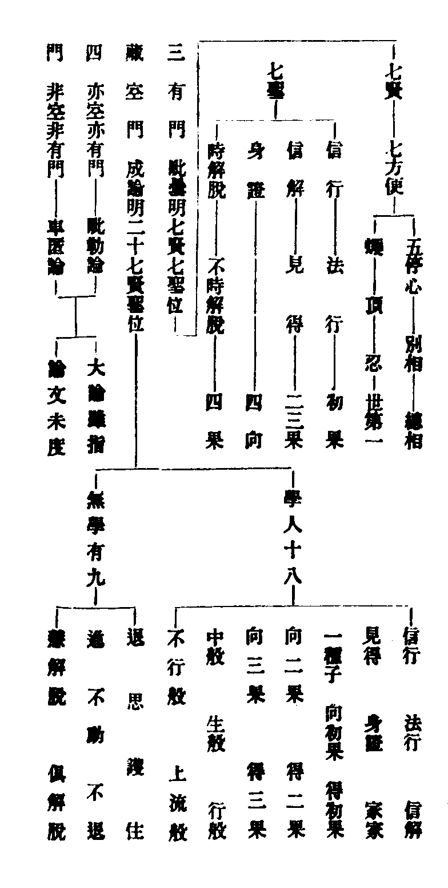
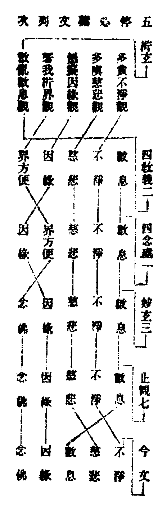
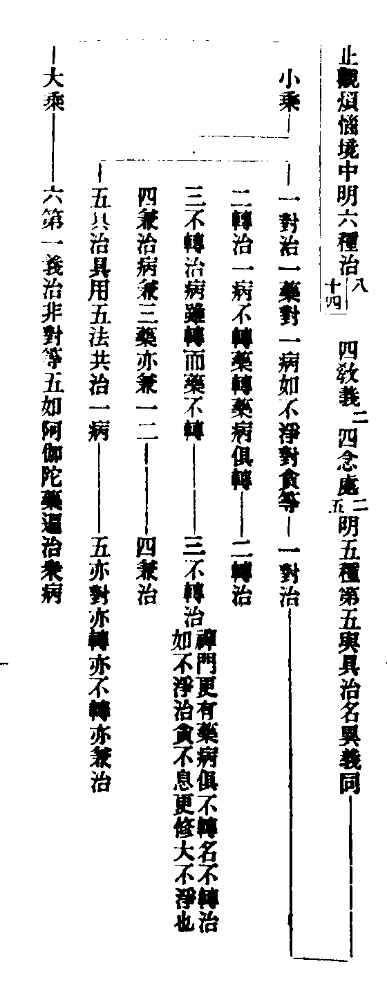
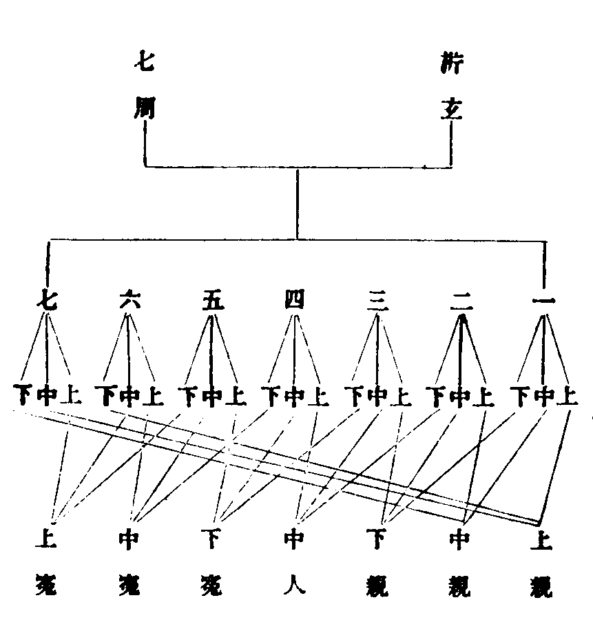
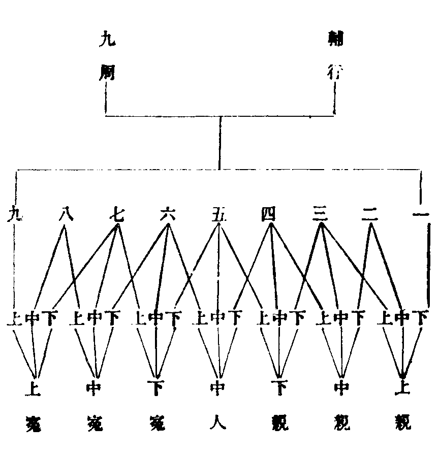
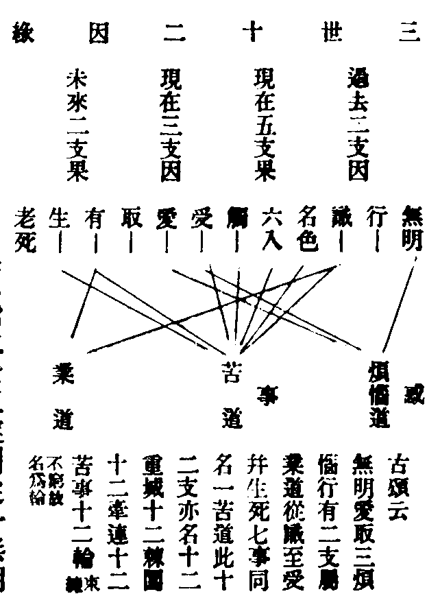
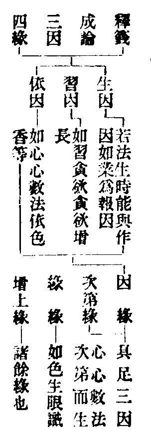
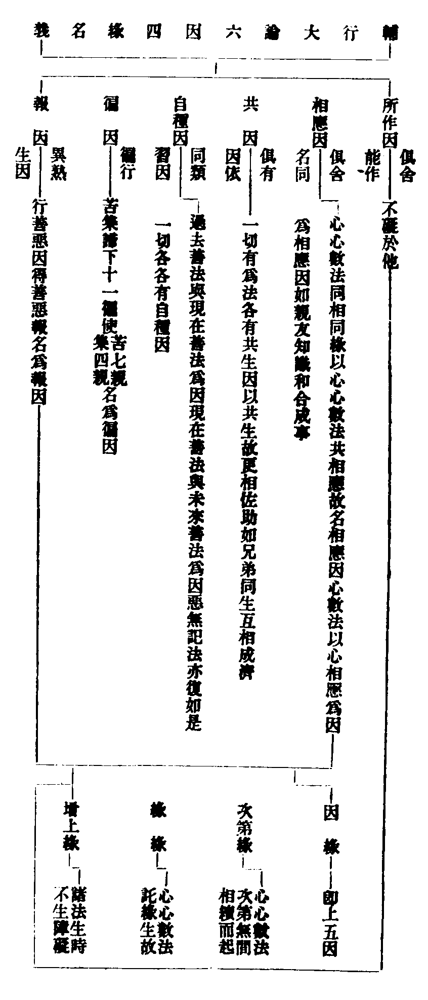
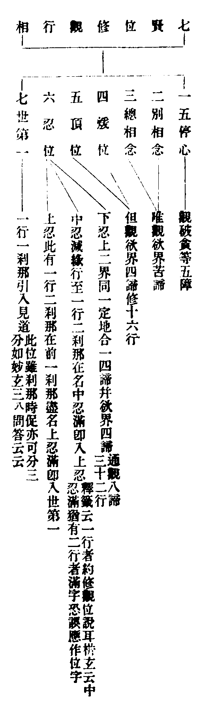
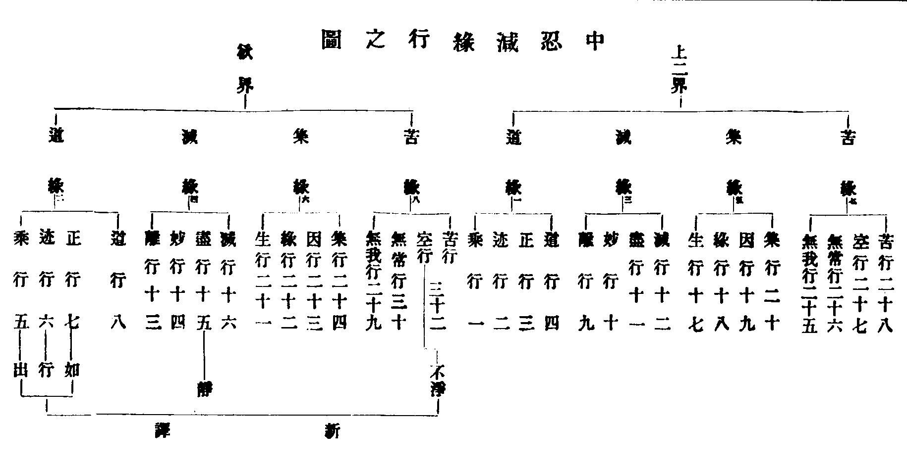

天台四教儀註彚補輔宏記卷五之上
△二行位三。初通標。
略明藏教修行。人之與位。
【□註】道標一教修行之人。及三乘位次。妙玄四(三十二)云。為破行人增上慢心。為消經文引物希向。(文)釋籤五(二十一)云。若無位次。將何以為見賢思齊。將何以越增上慢罪(文)。
【■記】此釋通標人位也。蓋位者。為顯三乘行人修因尅果有階差故。周易云。天地之大德曰生。聖人之大寶曰位。如是則知。若非位次。無以引行人之希向。如妙玄云。諸聖上位。非凡能測。豈可妄說。麤知大意者。為破行人增上慢心。為消經文引物希向也。見賢思齊。出論語。
△二別釋三。初聲聞三。初標位分科。
初明聲聞位。分二。初凡。二聖。凡又二。外凡。內凡。
【□註】凡有四門明位。一毗曇有門。明七賢七聖。二成論空門。明二十七賢聖。三毗勒論明雙亦門。四車匿論明雙非門。
【■記】此明位次有四門不同也。一毗曇有門。明七賢七聖者。四教儀二云。一毗曇有門。即三藏教明正因緣生滅之有。若稟此教。能破十六知見。見陰界入一切有為之法。皆悉無常苦空無我。得世第一法。發真無漏。因有見真。有。即第一義諦之門也。故大集經云。甚深之理不可說。第一實義無文字。聲聞弟子憍陳如。於諸法中得實義。此即毗曇論中之所申也。二成論空門。明二十七賢聖位者。四教義云。二成論空門。即三藏教明析正因緣假實法。生滅入空。若稟此教。能破假實之惑。見假實空。發真無漏。因空見真。空。即第一義之門也。故須菩提。在石室中。觀生滅入空。因空得道。名見法身。恐此是成論所申也。三毗勒論雙亦門者。四教儀云。三明有空門。即三藏教明正因緣生滅之有空。若稟此教。能破偏執有無之惑。見因緣有空。發真無漏。因有空而見真。有空。即第一義之門也。此即迦旃延因此入道。故作毗勒論還申此門也。四車匿論雙非門者。四教義云。四明非有非空門。即三藏教明正因緣生滅非有非無理。若稟此教。能破有無邊邪之執。見因緣非有非無。發真無漏。因非有非無見真。非有非無。即第一義之門也。惡口車匿。因此入道。論文未來此土。有人言犢子阿毗曇申此意也。彼論明我在第五不可說藏中。我非三世。即是見非有。非無為法。即是見非空。此恐未可定用。
【■補】因門契理。出三界苦。門。以能通為義也。蓋有門。則念念生滅。空門。則三假虗浮。雙亦。則有無從容。雙非。則有無俱遣。隨依一觀。可以發真。
【□註】後二門大論雖指。論文未度。若空門二十七賢聖者。學人十八。無學有九。四教義二(十七)云。賢人有二。聖人有二十五。(文)凡位不備。今家不用。釋籤五(二十)具引。
【■記】大論云。智者入三種法門。觀一切佛語。皆是實相。不相違背。何等是三門。一毗勒門。二阿毗曇門。三空門。何名毗勒門。答毗勒有三百二十萬言。佛在世時。大迦旃延所造。若佛滅度後。人壽轉減。憶識力少。不能廣誦。諸得道人。撰為三十八萬四千言。若人入此門。論議則無窮。其中有隨相門。對治門等種種法門。乃至不得波羅密多。若入阿毗曇。則墮有中。若入空門。則墮無中。若入毗勒。則墮有無中。又佛垂滅時。阿難問車匿事。佛答惡性車匿。吾涅槃後。心漸調伏。當為說陀那迦旃延經。即雙非門也。然論文雖指後二門。而論文未度者。未過來此土也。是則無位可憑。故不準此而明位也。如四教義言。惡口車匿。因此得道。末見論文是也。空門二十七賢聖者。成論第一分別賢聖品。廣明行得。乃至後結云。如是九種名無學人。先十八學人。及九無學。是二十七人。名為一切世間福田僧中具足。如下所示。四教義言。次明三藏空門二十七賢聖位者。信法二行即是兩賢。在方便道。空門發真。斷見惑未盡。行即須陀洹向。見惑斷盡。名須陀洹果。空解增明。斷欲界思一品。乃至五品。名斯陀含向。斷六品。是斯陀含果。斷七八品盡。名阿那含向。欲界九品思盡。是阿那含果。阿那含有十一種。帶果行向。是阿羅漢向。進斷上二界思惟也。若非想九品盡。即是阿羅漢。賢有二。聖有二十五。合有二十七。成論詳載。
【□註】今依有門。明聲聞位者有三意。一凡聖位足。二佛法根本。三符順教旨。佛法根本者。有門所說。世間諸法。乃是無明。正因緣生。不同外道。邪無因緣生也。又四教義云。大乘經論。破小用小。多取有門。少用空門。故須略出毗曇有門佛法根本賢聖之位(文)。
【■記】此明今取有門明聲聞位。一。凡聖位足者。謂賢位七。聖位七。二。佛法根本者。謂佛說世諦諸法。以有門為根本故。三符順教旨者。謂聖教旨趣。允合有門故也。佛法根本者下。別釋第二意。謂有門所說陰入界諸法。乃是無明正因緣生者。謂真如為因。無明為緣。無明為因。境界為緣。而有世間諸法生也。不同外道邪無因緣生者。以諸外道。或計萬法從梵天虗空等生故。又四教義下。是證釋有門是佛法根本。第三卷中問云。兩門不度。不可懸判。空門明義勝于毗曇。何故捨勝用劣。答。毗曇雖劣。於空門是佛法根本。故佛去世後。流傳利物。且大乘經論。破小用小。多取有門。少用空門。故須略出毗曇有門。明賢聖之位次也。
【□註】又二(初)云三藏四門。雖俱入道。而諸經論。多用有門。乃至圓教。多用非空非有門。
【■記】此證依有門明三藏位也。四教義云。隨教立義。必須逐便。若是三藏四門。雖俱得入道。而諸經論。多用有門。通教四門。雖俱得入道。而諸經論。多用空門。別教四門。雖俱得入道。而諸經論。多用亦空亦有門。圓教四門。雖俱得入道。而諸經論。多用非空非有門。然雖具舉四教四門皆可入道。而意別證藏教以有門明位次也。
【■備】此正引證順教旨意。
【□註】今不列七聖。直作四果釋者。名義顯故。
此明今文不作七聖列名。或謂既以有門明位。何故但列七賢。不列七聖。直作四果耶。故此釋云。以四果之名與義明顯故也。

【■記】此是入假菩薩作四論申四門。授四藥。治諸病也。今文為標三藏修行之與位次。註中具出明位。凡有四門。故以圖示諸名相也。然有七賢四果名相。下文逐一詳解。後二門論文未度。此不必言矣。然空門二十七賢聖名相。似與論文少異。今記之。對閱為便。謂成論二十七賢聖。開果向為三。謂信行。法行。無相行。及初果為四。五。二果向。六。二果。七。三果向。八。三果。於此果中。又開十二謂中。生。行。不行。樂定。樂慧。轉世。現。信解。見得。身證。并前七。為學人十八。開無學為九。謂退。護。住。思。死。不退。慧解脫。俱解脫。不壞法也。
【■補】空門學人十八至上流者。四教義云。通名學人。以皆研真斷惑故也。信行法行者。初向也。薩婆多云。因聞入者為信行。因思入者為法行。曇無德云。位在方便。自見法少。憑聞力多。後時要須聞法得悟。名為信行。憑聞力少。自見法多。後時還須思惟得悟。名為法行。天台遠討根源。久劫聽學。久劫坐禪。得為信法種子也。信解。二向也。以憑聞法信力。進趣真解故也。見得。三向也。以思惟力。見法得理故也。身證。三果四向也。以現身即證滅受想定。似涅槃法。故云身證也。家家者。受生處不一。即二向也。一種子。三向也。以欲界九品思惑已斷八品。只一品未盡。而命終尚有一生。故言一種子。若不命終。進斷一品。即證三果也。向初果者。於十六心中。前十五心無間道時。斷見惑未盡是也。得初果者。八忍八智具足。斷八十八使盡見真諦也。向二果者。欲界思惑已斷五品故。得二果者。斷六品思惑故。向三果者。斷七八品而不命終也。得三果者。欲界九品思斷盡故也。中般者。行人于欲界命終。生到色界。未到之時。即於中陰身發明聖道。而般涅槃。生般者。行人從欲界命終。生於色界。即般涅槃。行般者。生色界已。更能加功用行。斷上界思惑七十一品俱盡。而般涅槃。不行般者。生色界已。不加功用行。自然得盡苦際。聖道現前。而般涅槃。上流者。即流行之義。以次第上流色界諸天受生。斷七十一品惑盡。方般涅槃。無學九至俱解脫者。四教義云。無學以真窮妄盡故也。退者。俱舍言。謂遇少違緣。便退所得。思者謂退失。恒自思得。護者謂所得。善自防護。住者謂離勝退緣。離勝加行。進者謂具加行。能速達不動。不動者。謂不為煩惱所動。不退者。謂不退失所得。慧解脫者。以緣空直入。不得滅定故。俱解脫者。即帶事兼修。得滅盡定也。
【■備】辨訛曰。圖中初果下。應添向字。以信法二行。只在十五心。未到十六心故。應是初果向也。二三果上應添初字。以信解見得真理。方名初果等故。私謂。辨訛所說。合於四教義妙玄等文。然集註乃據俱舍。謂見道中有二聖者。一隨信行。二隨法行。此至修道。別立二名。一信解。二見至。定判。至補中所言信解二向。見得三向。俟再考定。
【□註】此依釋籤五(十八)列成論二十七賢聖。若輔行準俱舍列。則無身證。故料揀云。何緣身證不預其數。答。無漏三學。是聖者因。擇滅涅槃。是聖者果。滅定有漏。不是依因。是故身證。不預其數。
【■記】蓋釋籤明教途。故準成論列位。有身證名。今文依之列二十七賢聖也。若輔行明觀門。故凖俱舍列位。則無身證名。如俱舍言。契經說有十八有學。何緣於中不說身證。釋言。依因無故。何謂依因。謂諸無漏三學及聖者果。依彼差別。立有學故。滅定非學。非學果故。言三學者。無漏戒。即聲聞無作也。無漏定。即根本淨禪。觀練熏修也。無漏慧。即四聖諦理也。具此三學。方堪趣入聖位。乃是聖者之因也。言涅槃者。此理相應。見思斷盡。而證真空涅槃。乃是聖者之果。不依身證有漏為因也。是故身證不預其數也。
【■補】滅定有漏者。此是小乘事定。受想心滅。雖似涅槃。望四果猶為有漏。既屬有漏。則非前三果所依之因。故不預學人數也。然輔行如此揀者。欲學人緣理斷結。依無漏修。不可從事禪入耳。若以無漏心修事相定。則無入而不自得。非此論也。又此身證那含。非想思惑。猶未斷盡。正當入此滅盡定時。前六識心心所。悉不現起。則不與無漏觀智相應。而無斷惑證理之功。故屬有漏。非依因也。擇滅。解前。又合響言。滅定似涅槃法。故非學所攝。非真涅槃。故非無學攝。
【□註】中阿含三(十一)云。長者問佛。福田有幾。佛答同俱舍。且據學無學二十七人是同。然福出經列身證。俱舍則無也。
【■記】福田經佛言。世有二種福田。學人有十八。無學人有九。十八學人。謂信行。法行。信解。見得。身證。家家。一種子。向須陀洹。得須陀洹。向斯陀含。得斯陀含。向阿那含。得阿那含。中般。生般。行般。無行般。上流色究竟。九無學人。謂思法。升進法。不動法。退法。不退法。護法。護則不退。退則不護。實住法。慧解脫。俱解脫。是知經列身證也。俱舍則無者。論文言。學人謂四向。三果。信行。法行。信解。見得。家家。一間。中。生。行。不行。上流也。無學有九。謂退。護。思。住。進。不動。不退。慧脫。俱脫。是知論文不列身證。
【■備】二十七是同者。且據二十七數說。其相同。若身證有無。則異也。
【□註】凡者。常也。亦名為賢。賢者。善直。亦曰鄰聖。分內外者。相似見理名內。未得似解名外。
【■記】四教義云。此七位皆是非學。非無學。智。等智。似解。能伏見惑。因此似解。能發苦忍真明。故言鄰聖曰賢。今解名善直也。一切天魔凡夫。皆以愛著心修。一切外道。皆以邪見心修。虗偽邪曲。不名為直。佛弟子七種。明識生滅四諦理。知愛論見論。皆邪曲。伏此見愛邪曲心。用正信直心修諸善法。故名善直。復此一切愛論所詮。皆有生滅四真諦理。天魔眷屬。及諸凡夫。所不能見。故流轉生死。又一切見論。所詮皆有生滅四真諦理。六師外道悉不能見。故生死流轉。如涅槃云。我昔與汝等。不見四真諦。是故久流轉。生死大苦海。今七種從聞生解。明識此二種生滅四諦。故得信心正直。即是善直名賢也。又四義揀。一隨愛見而破戒。非直非善。二持戒禪定而生邪見。善而不直。三信心直見。而破戒心亂。直而不善。均不名賢。四信解真正。得佛教意。持戒清淨。修阿那般那不淨等觀。心得停住。乃名善直。初賢之位。內凡。謂於四真諦理。依稀見解。如未然者。名外凡也。
△二釋所稟法二。初凡二。初明外凡二。初分科。
釋外凡中自分三。
△二列法二。初調心對治法二。初標數。
初五停心。
【□註】停者。止義。住義。修此五法。止住五過。心者有四種。一草木。二肉團。三積聚精要。四慮知。今是慮知心也。
【■記】草木。能隨時生落。亦名心。肉團。色法所攝積聚精要者。如心經。是般若部旨要。戒本。名為戒心。是結戒要文。荊溪十不二門。亦文心之列。慮知心。外道多計之謂我。佛教判為緣慮心。教列八識。今指第六識。為今修行觀法心也。
【□註】此五停心。通於四教。具如四念處明。妙玄五(三)以五停心。對圓五品。禪門三(五)以停心名五門禪。義該大小。通於凡聖。菩薩等修。今是三藏聲聞助道也。
【■記】藏教五停如下。若通家停心者。覺觀多者。當觀入息不生。出息不滅。不生不滅。息即是空。無能觀所觀。皆不可得。不可得即真。真。即心停也。多貪欲者。當觀貪欲非垢。無貪非淨。非垢故不生。非淨故不滅。不生不滅。即空。空即真。真。故心停。多嗔恚者。當觀於慈慈。恚即不生。亦不滅。如上。著我多者當觀其身。如屠牛四分。但見四大。六根。五陰。十二入。十八界何處有我。即破我見。愚癡者。對因緣。觀三世破斷常。二世破果報我。一世破性實。善用五治。心即安住。得觀無生也。別停心者。前三藏數息不淨等停心。疎遠事偽。通以觀息不生不滅停心。即事而理近密真。今別教以持戒根本。若我住世。無異此也。即佛。依此而住即僧。雖爾。望於三藏。是密是真。望於實相。非近非密。非真非理。與前別後別。居季孟之間。此義可知。能持五支諸戒。釋論十種戒。于一一戒中。具足爾許法門。即是別停心。戒是法本。道之根源。故以戒為停心也。圓以五停心對五品。如下九卷圓教詳解。禪門以停心名五門禪等者。文曰。五門雖少。而行通諸禪。一阿那波那門。此通至根本。及特勝。通明等。諸禪三昧。二不淨觀門。此通九想。背捨。超越。諸禪三昧。三慈心門。此通四無量。等諸禪三昧。四因緣門。此通至十二因緣四諦等慧行。諸禪三昧。五念佛門。此通至九種禪及百八三昧。復次初數息門。是世間凡夫禪。次不淨門。是出世間禪。聲聞所行。次慈心門。即是凡聖二人為大福德。修慈入無量心。次因緣門。是支佛所行。次念佛門。功德廣大。是眾菩薩所行。此略明五門次第淺深相。

【□註】貪等是境。不淨是觀。四教義二(四)云。心既調停。乃可習觀。猶如密室之燈。入道根本。無過此五法也(文)。
【■記】此不淨觀思惟。於貪欲。名善對治法。於嗔恚病。不名為善。非對治法。以觀身過失。名不淨觀。若嗔恚觀身過失者。則增益嗔恚故。餘境觀例知。四教義云。修安般念有三。一始習行二已習行。三思惟已度。一數。是始習。二隨。而已習。三觀。而已度。復次數。隨。觀。皆名始習。得三種欲界未到地定。名已習。發諸初禪。名已度。餘不淨觀等。亦如是分別。心既調停。乃可習觀。如密室燈。入道無過此五法也。
【□註】或云五停心觀。則從慧。或云五門禪。則從定。定慧調適故名停心。
【□註】然上列次。析玄以不淨觀居初者。約三不善根次第也。第四明析界觀者。約不善根後辨。第五明數息者。散亂是隨煩惱。故於煩惱後辨。
【■記】三不善。即依貪嗔癡三根本煩惱故。首不淨。次慈悲。三因緣。又約三不善根辨著我。故析界為第四。而散亂既是隨煩惱。故數息觀於根本惑。後治之也。
【□註】四教義等文。皆以數息居初者。順修禪人。必先攝散入定故。四教義二云。今依禪門辨次第也。以病先後隨人。不須定執前後次第也。
【■記】四教義問。何不依數人說不淨觀為先。答。今依禪門辨次第也。
【□註】又諸文專以不淨數息居初者。妙樂六(十)引俱舍云。入道要二門。不淨觀數息。
【■記】俱舍言。入修要二門。不淨觀息念。貪尋增上者。如次第應修。長行釋曰。正入修門。要者有二。一不淨觀。二持息念。隨於何門。能正入修。如次應知。貪尋增者。謂貪猛盛。數現在前。如是有情。名貪行者。彼觀不淨。能正入修。尋多亂心。名尋行者。彼依息念。能正入修。則知諸文。或以不淨。或以數息為初者。隨病與藥也。
【□註】析界與念佛互存沒者。四教義二(四)問。此處何不說念佛三昧為五種耶。答。開因緣出界方便代也。界方便。與小乘念佛相同。亦破境界逼迫障(以二世因緣。與界方便。皆破著我。能破雖異。所破是同。故聞二世因緣。以破著我却出界方便。代念佛也。且界方便何以能代念佛耶。故下即釋出云。以界方便能破之相。與念佛所破境界之相是同。以皆不出六界十八界。故念佛破境界逼迫障。界方便亦破也)。
【■補】此料揀析界與念佛二觀。或用此則廢彼意。今先明四教義。以界方便摧著我。析界者。即分六界十八界相。以顯無我也。四教義答問言。以二世因緣破著我。出界方便。破逼迫障以代念佛。故不用念佛也。是知析界可以摧著我。可以摧逼迫。如今文開。分二世因緣摧著我。用念佛摧逼迫。故不須界方便。可見界方便。退能代二世因緣。進能代念佛。故四教義。四念處。存界方便。而沒念佛。妙玄。止觀。今文。存念佛。而沒界方便也。又界方便與小乘念佛相同者。以小乘念真空法身。則寂然無為。無六凡境界逼相可得。析界則觀根塵識三。畢竟無體。無十八界我相可得。故言相同也。
【■備】二世摧著我。念佛摧逼障下。因緣念佛觀中廣解。要知著我重者。專開界方便治。兼治逼障。若逼障重而著我輕者。專開念佛對治。而以因緣中。二世因緣摧著我。則著我攝入因緣觀破。此皆隨所宜也。
【□註】又四念處一問。此中何不云念佛停心。答。作五度門。則不用。作六度門。則須用。因緣自對等分(性實。斷常。著我。此三皆有。故云等分)念佛對逼迫障(文)。
【■記】此明念處存界方便。沒念佛意。原註等分。四教義云。愚癡對因緣觀。以一世破性實。二世破果報我。三世破斷常。故言自對等分。
【■補】此指愚癡為等分。以性實。斷常。著我。三皆愚癡故。作六度用因緣者。以病兼三種。故云等分。必須因緣也。
【□註】止觀七(十七)云。毗曇以界方便破我。(謂觀破六界十八界也)如輔行七上。
【■記】輔行云。毗曇以界方便破我者。我及斷常。并性實三。並屬癡故。初破我者。經論不同。雜阿毗曇說。著見行者。以界方便。愚夫不了宿業煩惱。積聚五陰。於緣計我。當於自身。以界方便觀察種種性。種種業。種種相。謂地等六界。地界水潤。而不相離。水界地持。故不流散。火界成熟。故不淤壞。風界動故。而得增長。空界空故。食得出入。有識界故。有所造作。由眾緣故。故知無我。又觀此身。不淨充滿。如吹散積沙。於無色法。前後相續。如是觀者。得空解脫門種子。於彼生厭。得無願解脫門種子。正向涅槃。得無相解脫門種子。是名界方便。若大經說。著我多者。為分析十八界法。此與六界總別之異論四大界。是十色界半。論識界。是七心界半。但合色為四。合心為一。更加空界。教門隨機。離合不定。今準禪經。因緣破我。大集。亦以二世破我。為簡異故。故俱列釋。
【□註】對治不同。今圖示之。

【■記】止觀六種治者。一對治者謂一分煩惱。即有三種。合成十二。對此亦有十二。如對宼設陣。名對治。二轉治者。如不淨。是貪欲對治。而非其宜。應以淨觀得脫。轉修慈心。念以淨法安樂。豈加穢辱。名轉治。若嗔人教不淨。癡人教思惟邊無邊。掉散教用智慧分別。此是疾不轉。而治轉。皆名轉治。若藥病俱轉。亦稱轉治。亦是對治。三不轉治者。病雖轉。治終不轉。但以此法。宜修此治。治轉不轉病。稱不轉治。四兼治者。病兼藥亦兼。如貪欲兼嗔。不淨須帶慈心。病兼一二。藥亦兼一二。是稱兼治。五具治者。具用上法。共治一病。是謂小乘先用五治。後用諦智得入真。大乘明治。非對非兼等。名第一義治。如阿伽陀藥。此翻著去。著去一切眾病。小乘多用三悉檀為治。大乘多用第一義治。四教義五治者。問云。此五觀門。為對五人。為對一人。答。橫對五人。豎為一人。隨病多少。對不定也。此五種觀法。對治五不善法。即有五意。一對。二轉。三不轉。四兼。五亦對。亦轉。亦不轉。亦兼。一對治者。覺觀多。修數息。貪欲多。修不淨。嗔恚多。修慈心。愚癡多。修因緣觀。著我多。修界方便。若行者覺觀等分。煩惱偏重。攀援不住。當修數息。隨觀息對治相應。則三種覺觀煩惱止息。心不動散。發諸禪定。定法持心。入出安隱。故名停心。四念處云。此五停門。復有五意。謂對。轉。不轉。兼。亦對亦轉。亦不轉。亦兼。對者。數息對覺觀。乃至方便對我。因緣對癡。對治若成。煩惱不起。又發禪定。禪定持心。安隱出入也。心既調停。方可習觀。若對治未益。更須用後四種治之。行者善用四隨。巧修五治。煩惱不能障。觀心停住。即入初賢位。具如禪門廣說。又二卷云。善用五法治心。心則安住。得觀無生。無生現前。即破煩惱。有直有善。名初賢。三種解見下。
△二列法五。初治貪觀法。
一多貪眾生不淨觀。
【□註】六識妄心於順情境上。引起無厭。故言多貪。禪門第四。明三種貪。一外貪。男女身分。互相貪著。用九想觀治。(觀他身)九想者(一胮脹。二青瘀。三壞。四血塗漫。五膿爛。六噉。七散。八白骨。九燒)。
【■記】禪門明。行人當修定時。貪欲心生。若男緣女。若女緣男。取其色貌姿容。威儀言語。即結使心生。念念不住。此是外貪婬結使發相。用九想治者。法界次第云。一[月*夆]脹想。觀死人[月*夆]脹。如革囊盛風。異於本相也。二青瘀想。觀死人皮肉。黃赤瘀黑青黤也。三壞想。觀死人風吹日曬。轉大裂壞在地也。四血塗漫想。觀死人處處膿血。流溢汙穢塗漫也。五膿爛想。觀死屍蟲血流出。皮肉壞爛。滂沱在地也。六噉想。觀死屍蟲蛆唼食。鳥啄其眼。狐狗咀嚼。虎狼抓裂也。七散想。觀死屍禽獸分裂。身形破敢。筯斷骨離。頭手交橫也。八骨想。觀死人皮肉已盡。但白骨筋連。或分散狼藉。如貝如珂也。九燒想。觀死屍為火所焚。爆烈煙臭。薪盡形滅。同於灰土。假令不燒。亦歸磨滅也。又輔行言。此九通治六欲。若別治者。死治威儀。言語。二欲。脹壞噉三。治形貌一欲。血塗膿爛青瘀三。治色一欲。骨燒二。治細滑一欲。九想又復通治所著人欲散。治人相欲。能動九十八使山。故所治最強也。
【□註】二內外貪。於他己身。而起貪愛。用八背捨治(先觀內身骨鎖故能治內)。
【■記】禪門云。行人於修定時。欲心發動。或緣外男女身相色貌。姿態儀容。起於貪著。或復自緣己身形貌。摩頭拭頸。念念染著。起於貪愛。障諸禪定。此內外貪欲發相。用八背捨治者。法界次第言。一內有色相外觀色。謂內有色相者。不壞滅內色相也。外觀色者。不壞滅外色相也。以是不淨心觀外色。所以然者。行人為修流光。故不應初背捨中。壞滅內身骨人。欲界結使難斷。故須以不淨心觀外色也。此初背捨。位在初禪。能捨自他及下地。故名背捨。二內無色相外觀色。謂內無色相者。壞滅內色相也。外觀色者。不壞滅外色相也。以是不淨心觀外色。所以然者。行人為入二禪內淨。故壞滅內骨人。欲界結使難斷。故猶觀外不淨之相也。三淨背捨身作證。謂淨者緣淨。故名淨。行者除外不淨相。但於定中練八色光明。清淨皎潔。如妙寶色。名緣淨。身作證者。以無受著心。而受三禪中徧身樂也。四虗空處背捨。謂若滅根本四禪。及三背捨。四勝處入一切處中色。一心緣無邊虗空而入定。即觀此定。依陰入界故。有無常苦空無我。虗誑不實。心生厭背。而不受著。深入不退。五識處背捨。若捨虗空。一心緣識。入定時。即觀此定。依陰入界故。有無常苦空無我。虗誑不實。心生厭背。而不受著。深入不迴。六無所有處背捨。若捨識。一心緣無所有。入定時。即觀此定。依陰入界故。有無常苦空無我。虗誑不實。心生厭背。而不受著。深入不迴。七非有想非無想背捨。若捨無所有處。一心緣非有想非無想。入定時。即觀此定。依陰入界故。有無常苦空無我。虗誑不實。心生厭背。而不受著。深入不迴也。八滅受想背捨。背受滅想諸心心數法。是為滅受想背。捨。所以者何。諸佛弟子。厭患散亂心。欲入定休息以涅槃法。安著心中。故言身證而受想滅也。
【□註】三徧一切處貪。資生五塵等物。用大不淨觀治(即八勝處。因於自身骨人觀成漸見十方依正。故能治自他貪欲)。
【■記】禪門言。此人愛著內外如前。復於一切五塵境界。資生物等。皆起貪愛。或貪田園屋宅。衣服飲食。即一切處貪發相。用大不淨觀治者。如大論治貪欲飲食云。觀是食。從不淨因緣生。如肉從精血水道生。是謂膿蟲住處。如酥乳酪。血變所成。與爛膿無異。厨人垢汗種種不淨。若著口中。腦有爛涎。涎道流下。與唾和合。然後成味。其狀如吐。從腹門入。地持。水爛。風動。火煑。如釜熟縻。滓濁下沉。濁者為屎。清者為尿。腰有三孔。風吹膩汁。散入百脈。與先血和合。凝變為肉。從新肉。生脂骨髓。從是中。生身根。從新舊肉合。生五情根。從此五根。生五識。五識次第。生意識。分別取相。籌量好醜。然後生我。我所心生等諸煩惱。及諸罪業。觀食如是本末因緣。種種不淨。知內四大。與外四大無異。但以我見故。強為我有。復次思惟此食。墾植耘除。收穫蹂治。舂磨淘汰。炊煑乃成。用工甚重。計一鉢之飯。作夫流汗。集合量之。食少汗多。此食作之功重。辛苦如是。入口食之。即成不淨。無所一值。宿昔之間。變為屎尿。本是美味。人之所嗜。變成不淨。惡不欲見。行者自思。如此弊食。我若貪者。當墮地獄。噉燒鐵丸。從地獄出。當作畜生。牛羊駱駝償其宿債。或作豬狗。常噉糞除。如是觀食。則生厭想。故於五欲皆厭。八勝處者。法界云。一內有色相外觀色少。若好若醜。是名勝知勝見。謂內有色相外觀色少者。緣少。故名少。若觀道未增。故須觀少因緣。觀多畏難攝。轉變不得隨心。如觀少。好醜法中不淨。轉變自在。通達無碍。心無取捨。不起愛憎。是也。二內有色相外觀色多。若好若醜。是名勝知勝見。謂內有色相外觀色多者。觀多因緣。故名多。觀心既調。則觀多無妨。若於多好醜不淨境中。轉變自在。通達無礙。心無取捨不起愛憎。是也。三內無色相外觀色少。若好若醜。是名勝知勝見。謂內無色相。如二背捨外觀色少。若好若醜等。皆如初勝處也。四內無色相外觀色多。若好若醜。是名勝知勝見。謂內無色相。如二背捨。外觀色多若好若醜等。皆如二勝處也。五青勝處。謂若觀青色。乃至照耀。勝於背捨。所見青相。亦不起法愛。是轉變自在。少能多。多能少光色名青勝處也。六黃勝處。七赤勝處。八白勝處。均類如青勝處中分別。今用四色為勝處。依大論也。若瓔珞經中。則以四大為四勝處也。因於自身等者大論言。譬如幻主。觀所幻物。知從己出。心不生著。能不隨所緣。是時背捨。變名勝處。於淨觀雖勝。未能廣大。是時行者。還取淨相。用背捨之力。及勝處之力。故取淨地相。漸漸遍滿十方虗空。水火風亦爾。取青相漸令廣大。亦遍十方虗空。黃亦白亦如是。是時勝處。復變為一切處。是三事。一義轉變有三名也。
【■補】名勝處者。以想心純熟。轉變自在。如人乘馬。能破前陣。亦能制馬。名勝也。漸見依正者。見依正皆不淨也。法數廣明。
【□註】析玄上(八)明四種。一顯色。謂青黃等。作青瘀想。二形色。長短等形。作壞爛想。三妙觸。自他身分。細軟光澤。作蟲蛆想。四供奉。祇承適意。用死想治也。此四望大論六種。缺人相音聲姿態等。
【■記】大論言。是九想。能除人七種染著。或有人染著色。若赤。若白。若赤白。若黃黑。或但染著形容。細膚。纖指。修目。高眉。或但染著威儀進止。坐起行住。禮拜俯仰。揚眉頓睫。親近按摩。或但染著語言。輭聲美辭。應意承旨。或但著細滑。柔膚軟肌。熱時身涼。寒時體溫。或有人皆著五事。或有人都不著五事。但著人相。如止觀言六欲。一色欲。二形貌。三威儀姿態。四言語音聲。五細滑。六人相。言人相者。癡人但染著人相。若男若女。雖見上五事。不得所著之人猶無所解。若遇之。則能捨世所重。頓忘身命。而隨其死。今引析玄四種望之。所缺人相音聲姿態。對之可見。
【□註】此不淨觀。與念處觀身有異。一正助不同。彼正。此加。二自他境別。彼觀自身。此想他境。三假實觀異。彼是實境。此是假想。
【■備】辨訛曰。自他境別句。當知九想內外俱觀。似不應言此想彼境。彼觀內身外身內外身。似不應言彼觀自身。私謂。彼五種。此九想等。彼統觀一期生死。此專作死想觀也。
△二治嗔觀法。
二多嗔眾生慈悲觀。
【□註】於違情境上。忿恨不已。名曰多嗔。佛令修慈悲觀可以對治。
【□註】若準禪門第四(二)義通大乘。境觀有三。一非理嗔。(歘起嗔心不問何否)修眾生緣慈(一切眾生如己眷屬)。
【■記】禪門明非理瞋發者。行人若修定時。嗔覺歘起。無問是非。他犯不犯。無事而嗔。是為違理邪嗔發相。修眾生緣慈者。觀一切眾生。如父母親想。智論明生緣慈者。十方五道眾生。以一慈心視之。如父母。兄弟。子姪。知識。常求好事。欲令利益安樂。如是慈。名眾生緣。多在凡夫行。或學人未漏盡者。
【□註】二順理嗔。(人實來惱我)修法緣慈。見一切法。皆從緣生。
【■記】禪門明順理嗔發者。行人若修定時。外人實來惱觸。而生嗔覺。相續不息。亦如持戒之人。見非法者。而生嗔恚。故摩訶衍說。清淨佛土中。雖無邪三毒。而有正三毒也。法緣慈者。大經明。見一切法。皆從緣生。智論明。諸漏盡阿羅漢。辟支佛。破吾我相。滅一異相。故但觀從因緣相續。生諸欲心慈念眾生時。從和合因緣相續生。但空五眾。即是眾生。念是五眾。以慈念眾生。不知五陰是法空。而常一心欲得樂。聖人憫之。令隨意得樂。為世俗法。故名法緣慈也。
【□註】三諍論嗔。(著己所解為是。謂他說行為非)修無緣慈(能所一體慈即無緣)。
【■記】禪門明諍論嗔發者。行人若於修禪時。著己所解之法為是。謂他所行所說為非。既不順己。即生惱心。世自有人。雖財帛相侵。猶能安忍。少諍義理。即大嗔恨。名諍論嗔發相。無緣慈者。大經明。不住法相。及眾生相。智論明。是慈但諸佛有。何以故。諸佛不住有為無為性中。不依止三世。知諸緣不實。顛倒虗誑。故心無所緣。佛以眾生。不知諸法實相。往來五道。心著諸法。分別取捨。以是諸法實相。令眾生得之。故名無緣慈也。
【□註】今是小乘助觀。當彼第一眾生緣慈。若法界次第。則具明慈悲喜捨四無量心。今但慈悲。
【■記】法界言。此四通名無量者。從境得名。以所緣眾生無量。故能緣之心亦無量。故悉受無量心名。慈悲。已解見前。喜者。慶他得樂。生欲喜心。名喜。捨者。若緣於他。無憎愛心。如證涅槃。名捨。廣解。如法界次第。
【□註】析玄準俱舍論。七周行慈。輔行九下(五)依婆沙。明九周行慈。而皆不出七境三樂。謂上親。(父母師長)中親。(兄弟姊妹)下親。(朋友知識)中人。(非冤非親)下冤。(害下親者)中冤。(害中親者)上冤。(害上親者)三樂者。析玄上(十一)謂諸佛。(上)菩薩。(中)諸天。(下)輔行引婆沙云。三禪。(上)四事。(中)經行處(下)。
【■記】七九二周行慈。如上示。此所判七境。大經疏。境有九品。冤親中人。各有三品。或謂。中人唯一。但七耳。中人於我無冤親。不須開三。然中人不無愚智貴賤之殊。故可分三。成九境。即有九慈。次修觀內云。若全未修。但欲與三親三樂。三冤三苦。三種中人。不與苦樂。若初修慈。於三親中。與三品樂。於三中人。與三品樂。於三冤人。上冤與下樂。中冤與中樂。下冤與上樂。第二修時。上冤與中樂。中下兩冤與上樂。第三修時。三冤並與上樂。未是親中三種之樂。第四修時。以中人下樂。並與三冤。第五修時。以中人中樂並與三冤。第六修時。以中人上樂。並與三冤。第七修時。以三親下樂。並與三冤。第八修時。以三親中樂並與三冤。第九修時。以三親上樂。並與三冤。是名上冤。與增上樂。爾時名慈心成就。又直取三品樂。與九種境。初觀時。三親與二樂。第二時。中親。與上樂。下親與中樂。第三時。下親與上樂。第四時。下中人與下樂。第五時。下中人與中樂。第六時。下中人與上樂。第七時。上冤與下樂。第八時。上冤與中樂。第九時。上冤與上樂。是名慈心成就。今欲知其與此有別。故具記之。
【□註】輔行九(五)引婆沙云。問。與眾生何處樂。答。有說與三禪樂。樂中勝故。有說與四事樂。已曾得故。有說與經行處所有樂。至至住處。思惟令得(文)。
【■記】婆沙言。或有說者。與第三禪樂。以三禪樂。是一切生死中最勝樂故。若作是說。不起第三禪者。則不能起無量。復有說者。過去世曾得第三禪樂。以第三禪定。念前世智。觀彼樂已。以彼樂令眾生樂。若作是說。若不得第三禪地。念前世智。則不能起無量。復有說者。以近所更樂。如飲食樂。乘樂。衣裳樂。臥具樂。以如是等樂。相令樂。尊者和順密說曰眾生有樂者。以如是相。令眾生樂。若作是說。慈則不能緣一切眾生。所以者何。一切眾生。不必有樂。復次眾生有樂根。以如是相。令眾生樂。若作是說。慈則不能緣一切眾生。所以者何。一切眾生。不能於一切時起樂根現在前故。復次眾生。有飲食樂。乘樂。衣裳樂。臥具樂。以如是樂相。令眾生樂。若作是說。慈則不能緣一切眾生。所以者何。一切眾生。不必盡得如是樂故。尊者佛陀提婆曰。以所知見樂。取如是相。以憐愍心。令眾生樂。如本方便時。若依村住。若依城住。以日前分乞食。見受樂諸人。或乘象馬車與而行。或以種種瓔珞嚴身。或見純受若者。如無衣裳飲食。執破瓦器。從他家乞取。如是苦樂相。速還住處。洗足結跏趺坐。令身心柔輭。無障礙觀。先所取相眾生樂者。常令得樂。眾生苦者。令得先所見樂。則知輔行略取其三種也。
【□註】若析玄三樂。恐成過分。隨機之說。貴在治障。不可概論。
【■記】蓋諸佛樂。乃無上菩提覺法樂。無上涅槃寂靜樂。未得旨者。恐成過分。尊者和須密曰。不以住慈故。令眾生樂。但以此法作方便。能制恚斷結。又尊者佛陀提婆曰。此觀當言不顛倒。所以者何。與恚相妨。則知行慈。貴在治障。不可概以與樂為論。

【■記】析玄七周者。俱舍論云。云何修慈。謂先思惟自所受樂。或聞說佛菩薩聲聞獨覺等所受快樂便作是念。願諸有情。一切等受如是快樂。若彼本來煩惱增盛。不能如是平等運心。應於有情。分為三品。所謂親友。處中。冤仇。親復分三。謂上。中。下。中品唯一。冤亦分三。謂下。中。上。總成七品。分別品已。先於上親。發起真誠與樂勝解。此願成已。於中下親。亦漸次修如是勝解。於親三品。得平等已。次於中品。并下中上冤。亦漸次修如是勝解。由數習力故。能於上冤。起與樂願。與上親等。修勝解脫。既得無退。次於所緣。漸修令廣。謂漸運想思惟一邑。一國。一方。一切界。與樂行相。無不遍滿。是謂修習慈無量成也。

【■補】輔行九周者。謂初修時。令上親人得於下樂。次修令上親得於中樂。中親得於下樂。次修令上親得於上樂。中親得於中樂。下親得於下樂。次修令中親得於上樂。下親得於中樂。中人得於下樂。次修令下親有於上樂。中人有於中樂。下冤有於下樂。次修令中人有於上樂。下冤有於中樂中冤有於下樂。次修令下冤有於上樂。中冤有於中樂。上冤有於下樂。次修令中冤得於上樂。上冤得於中樂。次修令上冤得於上樂。是名輔行九周。行人修慈心觀成就之相也。
【□註】先親後冤者。從易至難。順心成觀。
【■備】蓋以樂與其親。則其觀易成。若以樂與其冤。則其觀難就。此人情之常事也。故今以親在於前觀。而先與其樂。以冤在乎後觀。而後與其樂。是謂順眾人之心而成其所觀之慈也。
【□註】若析玄。第六觀方與上親下樂。第七上親中樂。中親下樂者。一者次第修觀。未暇與故。二者順七周次第。每一番用觀。先與上樂。中下非要。故在後時。與雖前後。境境皆三。使冤親平等。以破嗔障。
【■記】此別明析玄第六觀所與境樂。謂有二意。一者謂據次第修觀。則應初觀中。當以上樂。與上親。中樂與中親。下樂與下親。乃至第七觀中。以上樂與上冤。中樂與上親。下樂與中親。如前圖說。是故據次第修觀。當在六七周中。與上親中親境。下樂中下樂也。二者。謂順七周次第。皆以上樂與人。則初周。應以上樂與上親。二周以上樂與中親。三周以上樂與下親。乃至七周以上樂與上冤。亦如前圖說。是則中下二樂非要。故於六七周中。以下樂中。下樂與上親中親境也。然與樂雖有前後。而七境皆得三樂。且如上親。於初一周得上樂。至第六周得下樂。第七周得中樂。乃至上冤。於第五周得下樂。第六周得中樂。第七周得上樂。上品親冤。皆得三樂。中下冤親。及其中人。皆得有此三樂也。如此行慈。能使冤親平等。以破嗔障也。
【□註】輔行開為九周者。一順從親至冤。次第與樂。不待六七。却緣前親。
【■記】此別明輔行九周行慈。謂順從親至冤。次第與樂。則初周與上親下樂。二周與上親中樂。三周與上親上樂。乃至第七與上冤下樂。第八與上冤中樂。第九與上冤上樂。是則一二三周。即與上親三品樂矣。豈待六七周。却緣前之上中親境。方與下樂中下樂乎。是以輔行依婆沙。開為九周也。
【□註】又復前境。為得不得。蓋為破障。且爾運心。其實前人。實未得樂。故析玄上云。問自身有樂。可施於他。忽若自身無樂。將何施與。答。自身若無樂可施。即運心將餘諸天菩薩等樂而惠施之。願彼冤親平等。眾生得受如是等樂故。又涅槃疏云。雖欲拔苦。實未拔苦。皆是虗言。雖欲與樂。實未得樂。此是假說。
【■備】辨訛曰。又涅槃乃至此是假說一節。似不須引當知此中正意。在運慈悲平等之心。功力不可思議。彼釋乃反顯之文。意謂二乘雖修慈悲。亦只是自己離苦得樂。不能利他。故曰此是假說。及虗言等。正顯菩薩方能利他也。私謂。此恐後人不知。便謂慈悲虗設故明之。
【□註】又行者用觀。當念冤讎如過去父母等。方能冤親平等與樂。廣如析玄上。(云云)。
△三治散觀法。
三多散眾生數息觀。
【□註】攀緣思慮。與定相違。故名多散。息有四相。止觀八(十七)云。有聲曰風。守之則散。結滯曰氣。守之則結。出入不盡曰喘。守之則勞。不聲不滯。出入俱盡曰息。守之則定。(文)數者。從一至十。不多不少。令心不散。禪門第五(二)有四師。第一師數出息。不急不脹。身則輕利。易入三昧。二師數入息。隨息內斂。三師出入無在。但取所便而數。
【■補】心浮。繫心丹田。數入息。昏沉。繫心鼻端。數出息。
【□註】四師依四時用數。
【■補】春夏發生。數出息。秋冬收斂。數入息。
【□註】今家正依第三師。又不許出入俱數。恐生病故。
【■記】禪門有四師明數息。一師教繫心數出息。則氣不急。身不脹滿。身心輕利。易入三昧。有師教數入息。有五意。一易入定。隨息內斂故。二斷外境故。三易見內三十六不淨物故。四身力輕盛故。五內實息貪恚故。有如是勝利。應數入息。有師教數入出無在。但取便而數。無得偏用。隨人心安入定。無過即用。三師所論。皆不許出入一時俱數。何以故。以有息遮病。生在喉中。猶如草葉。吐則不出。咽則不入。此患生故。又有師依四時用數。今所未詳。今依第三師法也。
【□註】梵語阿那波那。此云遣來遣去。入息出息。即是三世諸佛。入道初門。通於三乘四教。
【■記】翻譯名義云。阿那。亦曰安那。此云遣來。入息也。般那曰遣去。出息也。安般守意經言。安為身。般為息。安為生。般為滅。安為念道。般為解結。所以先數入者。外有七惡。內有三惡。用少不能勝靈。先數入也。入道初門者。提婆云。佛說甘露門。名阿那波那。於諸法門中。第一安隱道也。
【□註】又用息明六妙門。謂數隨止觀還淨。攝心在息。從一至十。名之為數。細心依息。知入知出。故名為隨。息心靜慮。名之為止。分別推析。名之為觀。轉心返照。名之為還。心無所依。妄波不起。名之為淨。如法界次第上。今是小乘助道。但名數息。
【■記】法界言。六法次第相通。能至真妙泥洹。故言妙門。一家所明。有十種六妙門。今但略出次第相生一科。六門以為次者。此六門。既是亦有漏亦無漏禪。於餘亦有漏亦無漏禪中。淺而且局。故以為次也。一數息門。攝心在數。從一至十。名數。修無漏真法。先須調心入定。欲界麤散難攝。非數不治。故須善調身息。從一至十。則麤亂靜息。心神淨住。為入定之要。故數為門。二隨息門。細心依息。知入知出。曰隨。雖因數息心住。禪定未發。若猶存數。則心有起念之失。故放數修隨。心依於息。入時知入。出時知出。長短冷煖悉知之。若心安明淨。則諸禪自發。故隨為門。三止門。息心靜慮。曰止。雖因隨息。心安明淨。而定猶未發。若心隨。則微有起想之亂。澄淳安隱。莫若於止。故捨隨修止。多用凝心止也。凝心寂慮。心無波動。則諸禪定自然開發。故止為門。四觀門。分別推析曰觀。雖因止證諸禪定。解慧未發。若住定。則有無明味著之乖。須推尋檢析。證諸禪定。多用實觀四念處也。觀心分明。則知五陰虗誑。破四顛倒。及我等十六知見。顛倒既無。無漏方便因此開發。故觀為門。五還門。轉心返照曰還。雖修觀照。而真明未發。若計有我能觀析。破於顛倒。則計我之惑。還附觀生。同於外道。故曰外道計著觀空觀智慧。不得解脫。若覺此患。即當轉照能觀之心。若知能觀心虗誑無實。即附觀執我之倒自亡。因是無漏方便。自然而朗。故還為門。六淨門。心無所依。妄波不起。曰淨。修還之時。雖破觀倒。若真明未發。而住無能所。即是受念。故令心智穢濁。覺知此已。不住不著。泯然清淨。因此真明開發。即斷三界結使。證三乘道。故言其清淨。得一心者。則萬邪滅矣。以淨為門。意在此也。
【■備】辨訛曰。今是小乘助道二句似局。當知六妙。前三是定方便。後三是慧方便。修至第三得定已。即觀四念處。後三亦可屬四念處攝。既屬定慧。不可但言助道數息也。私謂此中乃停心方便。專以數息。判助道亦可。
天台四教儀註彚補輔宏記卷五之上
天台四教儀註彚補輔宏記卷五之下
△四治癡觀法。
四愚癡眾生因緣觀。
【□註】迷倒不了。撥無因果。故曰愚癡。須知著我。及計斷常。并執性實。三皆迷倒。
【■記】三種迷倒。禪門謂之三癡。一計有無。謂我及陰等。有耶無耶。如是乃至非有非無耶。此著我也。二計斷常。謂過去諸法為滅而有耶。現在諸法。不滅而有耶。推尋三世。若滅即斷。不斷取常。此計斷常也。三計世性。謂由有微塵。乃有實法及四大。由有四大。乃有假名眾生世間因茲思念而行邪道。此執性實也。
【□註】因緣者。法界次第中(十七)云。展轉感果為因。互相由藉為緣。(文)如無明為因。能與行支為緣。乃至生支為因。能與老死為緣。
【■記】法界言。是中略說煩惱業苦三事。更互為因緣。是煩惱業因緣。業苦因緣。苦苦因緣。苦煩惱因緣。煩惱業因緣。業苦因緣。苦苦因緣。是為展轉更互為因緣。如無明下舉例。則知因緣有二法。如言因親緣疎。因如種子緣如雨露。故以親能感果為因。疎而助發為緣。今就一支法上。論因緣也。
【□註】四教義二(十八)云。十二因緣有三種不同。一者。三世十二因緣。過去二支因。現在五支果。現在三支因。未來二支果。二者。二世十二因緣。現在有十。未來有二。三者。一念十二因緣。此約現在。隨一念心起。即具十二因緣。三世破斷常。二世破著我。一念破性實也(文)。
【■記】四教義言。過去二因。謂無明。行。現在五果。謂識。名色。六入。觸。受。現在三因謂愛。取。有。未來二果。謂生。老死憂悲苦惱。是為三世合明十二因緣。從無始來。生死不絕。不修觀智。未來流轉。無有邊際。若修觀智。則無明滅。乃至老死憂惱皆滅。名因緣覺也。二世因緣者。備具大集經。佛為求辟支人說。現在十。未來二。有解現在九。未來三。現在十者一無明。大集言。何謂觀於無明。先觀中陰入父母所。先貪愛心。愛因緣故。四大和合。精血二滴。合成一滴。名歌羅邏。是有三事。一命。二識。三煖。過去世中。業緣感果。無有作者。及以受者。初息出入。是名無明。有三種道。謂隨母氣息上下。七日一變。息入出。名壽命。是名風道。不臭不爛。名煖。是中心意。名識。二行者。復觀三受因緣。五陰。十二入。十八界。云何為觀。隨於念心。觀息出入。觀於內身皮膚肌肉。筯骨髓腦。如空中雲。是身內風亦如是。有風能上。有風能下。有風能滿。有風能燋。有風增長。故息之出入。名身行。以出入息。從覺觀生。名意行。和合出聲。名口行也。三者識。三行因緣。則有識生。名識。四名色者。著識因緣。則有四陰。及色陰。名名色。五六入者。五陰因緣。識行六處。名六入。六觸者。眼色相對。名觸。乃至意法亦如是。七受者。觸因緣故。念色至法。名受。八愛者。貪色。乃至於法。名愛。九取者。愛因緣故。四方求覔。名取。十有者。取因緣故。受於後身。名有。此下二因緣。屬未來也。十一生者。有因緣故。有生名生。十二老死。生因緣故。則有老死種種諸苦。是名陰。入。界。十二因緣之大樹。若聞此發真無漏亦名因緣覺也。一念因緣者。約現在。一念起。即具十二因緣。亦出大集。為辟支人說。經云。眼見色生愛名無明。為愛造業。名行。至心專念。名識。識色共行。名名色。六處生貪。名六入。因入求愛。名觸。念色至法。名受。若心貪著。名愛。求是等法。名取。此等法生。名有。次第不斷。名生。次第斷故。名死。生死因緣。眾苦逼迫。名惱。乃至意法生貪亦如是。若聞此心意開解。發無漏慧。亦名因緣覺也。
【□註】輔行七上(末)云。三世破斷常者。三世相續。故不斷。三世迭謝。故不常。又過去破常。未來破斷。現在雙破斷常。二世破我者現未二世。具十二因緣。於父生愛。於母生嗔。名為無明。父遺體時。謂是己有。名之為行。從識支去至老死支。與三世同。(文)輔行八上(十一)云言一念者。非謂極促一剎那時。謂善惡業成。名為一念。異於三世。二世。連縛等相。故名一念。皆是無常。故無性實。(文)如妙玄二(十六)禪門三(九)。
【■記】三世破斷常者。謂過引現在。現引未來。相續不斷。又過去已滅。未來未生。現在念念遷謝。事不恒常。此三世總破斷常。又以三世別治者。謂前前滅故。破計常。或曰過去已往。不至現在。故破常。後後相續。故破斷。或言未至。雖未至。猶待接續。故破計斷。現在則非過去。故破斷計。非未來。故破常計。是為現在雙破斷常也。二世破我者。以二世十二支推之。俱非實有我體。是為二世摧著我也。言一念者。謂善惡業成。此正示具足十二因緣之一念。如言善心纔舉。天宮寶殿生成。惡念始萌。地獄火輪已具是也。連縛等相者。等乎分位遠續也。如輔行言。俱舍婆沙委論。具有四種十二因緣。一剎那。二連縛。三分位。即對歲而論是也。四遠續。如支佛觀百千萬世等。如今生造惡。來生未必受報。直待後後世。方受故名也。後三只是三世因緣。以約能順生後等受。故開三耳。又論云。連縛者如品類足論。謂遍有十二支位。所有五蘊。皆分位攝。即此懸遠相續無始。說為連縛。華嚴鈔言。連縛要因果無間。相連起也。若情非情。皆有生滅念念相續。故剎那連縛。遍一切有為也。分位緣者。要約順生受業。及不定業。三世十二支。五蘊分位。若遠續者即前分位遠相續耳。順正理論言。遠續緣者。謂前後際。有順後受業。及不定業。無始流轉。如說無明有愛本際不可知等。連縛緣者。取相連接。相繫不斷。彼疏釋言。遠續。唯隔越。連縛。唯無間也。皆是無常。此結一念破性實也。
【■備】天溪備簡補遺引妙玄二者文言。十二因緣支。二是過去。則止常。二是未來。則止斷。現在。則顯中道。推現在三因。則說未來二果。推現在五果。則說過去二因。三世皆有十二支。為推因果。故作如是說。又言。一剎那。十二緣者。若以貪心殺生。彼相應愚。是無明。相應思。是行。相應心。是識。起有作業。是名色。起有作業。必有六入。彼相應觸。為觸。彼相應受。為受。貪。即是愛。彼相應纏為取。彼身口作業。是有。如此諸法生。是生。此諸法變是老。此諸法壞。是死也。禪門三者文言。一明三世十二因緣善根發者。欲界未到定心中。忽然覺悟心生。推尋三世。過去無明以來。不見我人無明等法。不斷不常。能破六十二種諸邪見網。二明果報十二因緣善根發者。亦欲界未到定心中。忽覺識心明利。尋思我初生時。攬父母身分以為己有。名歌邏羅。名曰無明。歌邏羅時。但有三事和合。無人無我。三事不實。今無明等十二因緣諸法。竟何所依。若不見無明等諸法是有者。豈是無耶。如是念時。破有無二見。慧解開發。三明一念十二因緣善根發者。亦欲界未到定心中。忽覺剎那之心無人無我。性本無實。以一念起時。必藉因緣。言因緣者。即具十二因緣。緣無自性。一念起定有實。若不得一念之實。即破世性邪執。心與正定相應。智慧開發也。
【□註】然此三種因緣破愚癡者。著我在內。準大集禪經說。若毗曇大經。乃以界方便破著我。此皆隨機宜樂也。
【■補】大集云。十二因緣。能破愚癡。禪經云。佛所說緣起。令諸修行功德增益。滅除愚癡。觀察緣起。遠離斷常二邊諸想。輔行釋止觀曰。今準禪經因緣破我。大集亦以二世破我。
【■記】毗曇以界方便者。雜阿毗曇云。以愚惑故。於緣起所作中計我作等諸邪見縛。或時修行。近善知識。得聞正法。起正思惟已。能於此身界方便。觀此身種種自性。種種業。種種相。謂地等六界。彼地界為水界潤。故不相離。水界為地界持。故不流散。火界成熟。故不淤壞。風界動搖。故得增長。空界空故。食等入出。識界合故。有所造作。又觀此身。從足至頂。種種不淨。穢惡充滿。觀察此色。如猛風飄散積沙。於無色法。先後相續。異分觀察。如是觀者。得空解脫門種子。於彼生死。厭離不樂。得無願解脫種子。於生死不樂已。正向涅槃。得無相解脫門種子。若於此得不作想覺已。觀一切有為皆悉散壞。是名界方便滿。是即破著我文也。大經以界方便破著我者。經云。著我多者。則為分別十八界法是也。
【□註】若束十二為三道。輪轉相生者。俱舍云。三煩惱二業。七事亦名果(雖有十二而二三為性三為惑業事二謂因果)。
【■記】性。類也。論云。無明愛取。煩惱為性。行及有支。以業為性。餘識等七以事為性。如是七事。即亦名果。義準餘五。即亦名因。以煩惱業為自性故。
【□註】略果及略因。由中可比二(後際略果。前際略因。中間廣說。可比知也。此準俱舍缺略義。若準婆沙。前際略果。後際略因。乃全略義。補注十二引論具釋)。
【■記】俱舍缺略義者。論言。由中際廣。可以比度前後二際。廣義已成。故不別說。意明現在既望過未成十二。當知過未。亦自相望。各有未過。故玄文云。推現三因。則說未來二果。推現五果。則說過去二因。三世推之。皆有十二支因果也。補註失詳。
【■補】前際但說無明行因。則略去果。後際但說生死果。則略去因。此是婆沙全略之義。
【□註】又云。從惑生惑業。從業生於事。從事事惑生。有支理惟此。
【■記】此頌是論釋難。論先難言。若緣起支唯十二者。不說老死果。生死應有終。不說無明因。生死應有始。或應更立餘緣起支餘後更有餘支成無窮失。不應更立。然無前過。此中世尊由義已顯。云何已顯。故舉此頌明之。
(十二因緣通名有支。道理惟若此也。此名束十二輪為三道。以能通義與輪轉義同。廣如輔行三下（十四）釋)。
【■記】論釋頌言。從惑生惑。謂愛生取。從惑生業。謂取生有。及無明生行。從業生事。謂行生識。及有生生。從事生事。謂從識生名色。觸生受。及生支生死。從事生惑。謂受生愛。由立有支。其理唯此。已顯老死。為事惑果。及顯無明。為事惑因。無明老死。事惑性故。豈假更立。餘緣起支。故經言。如是純大苦蘊集。若不爾者。此言何用。如輔行釋者。文云。束十二緣。以為三道。十二因緣。輪轉相生。是故三道。亦輪轉相生。大論十二因緣論。婆沙十地經等並同。餘俱舍及論釋。與此記錄是同。故不重記。

【■記】束為三道者。從三煩惱。生於二業。謂從一無明。出行業。從愛取二。出有業。又從二業生七苦。謂從一行。出識等五。從一有。出生老死二也。七復生三者。識等五。出愛取二。生死二。出無明。淨意菩薩偈云。煩惱初八九。業二與十支。餘七說為苦。三攝十二法。從三故生二。從二故生七。從七復生三。是故如輪轉。一切世間法。惟因果無人。但從諸法空。還生於空法。名重城者。取困厄義。棘園。取難脫義。牽連。取繫縛義。十二苦事。取逼迫意。十二輪取流轉義也。三世十二因緣。詳釋六卷。

(釋籤云若俱舍中因緣五因性成論以所作因即是增上故不別立但立報因即生因是自分因即習因是共因即依因是)。
【■記】三因四緣。出成實論二。釋籤中。但會通俱舍大論。以明成論三因四緣。此圖依釋籤立。
【■備】生因者。善惡報法生時。能與其善惡因。如業相應。故為報因。
【■補】習因者即自種因。如前念習善惡。後念善惡得相續起。依因者。如眼識必依九緣得生等。謂依第八識。依第七意根。六意識。五眼識。眼根。空。明。色。作意。解出唯識論此中不明九緣。但依色香等。因緣者。具足生習依三因。若準唯識。彼局此寬。唯識但約親義。取種生種。種子生現。現行熏種。乃是因緣。今小乘因親緣疎。親疎合論。故三因皆名因緣。次第緣者。前心心所。開導於後。後心心所。即聞處起。成論言。如以前心法滅。故後心法得次第生也。緣緣者。新譯為所緣緣。以能緣之心。緣所緣之境。境引心生。心因境有。成論言。若從緣生法。如色能生眼識。大論言。心心數法。緣塵故生。是以境為所緣。此緣有為生識之緣。故名緣緣。增上緣者。有四。謂逆。順。親。疎。泥水。為草木順增上。霜雪。為草木違增上。觀自己根塵而生眼識。為親。觀他人之根塵。為疎。諸餘緣者。謂三緣之外。其餘皆屬增上攝。若俱舍中因緣五因性等。乃明成論三因四緣。即同毗曇六因四緣。但立下會通毗曇之名。有言報因等。此非會通。大論所立。記中悞也。以妙玄中。全無大論之語。籤內豈捨毗曇。而反會大論之名。然集註中具明因緣者。以因緣義佛法根本。故廣示會通。自分因。毗曇所立。即大論自種因。存參。
【■備】辨訛問言。大論俱舍俱六。何以成論立三。答。宗旨不同耳。當知成論不別立心數。但約前念起為心。後念起為數。故無相應。及徧行。徧行。乃染心所攝。所作即增上緣。故只立三因。存考。

【■記】輔行言。新譯次第緣。名等無間緣。緣緣。名所緣緣。餘二名同。然龍樹立名。什公翻譯。雖少不同。應非全失。以大論是一家承用。名字稍同。故且依之。然以四緣攝六因者。如俱舍頌曰。說有四種緣。因緣五因性。等無間非後。心心數已生。所緣一切法。增上即能作。所以輔行明之者。謂今明於事度事蔽。善惡相發。是六因中。四因所攝。四緣之中。多少不同。故略明四緣。及以六因也。而六因四緣名義。詳釋如論。今圖但會通俱舍成論義耳。
【■補】大論六因四緣者。所作因。謂能為一切所生法作因。不遮礙於他法。亦云能作因者。謂能為一切諸法作生起之因。即法生時。諸法於他不為障礙。且與其力。如眼根於識。飲食於身。佛於眾生等。皆是能作也。二相應因者。解言。心心數法。同相同緣。以心心數法。共相應故。如眼識心王。與受想等同一能緣行相。同一所緣塵境。以心王與心數法相應而起。王。即以數為相應因。若心數法與心相因而起。數即以王為相應因。眼識既爾。餘耳識等亦然。此因惟屬心。心數法。不通餘法。如親友知識和合成事者。若依唯識。如眼識緣色。心王生起。定有五種徧行心所。五種別境心所。或善則有善十一種心所。或惡則有根隨二十六種煩惱心所。如此心心數法。同一能緣行相。同一所緣之境。善則同善。惡則同惡。必相應起。故如親友等和合成事也。三共因者。如眼識生起。必藉多緣。謂空。明。根。境。作意。分別依等。更相佐助而得生起。名共生因。俱舍亦名俱有因者。註言。一切有為法。名共生因。如四大種。更互相望。為俱有因。地大。待水火風等為因。乃至風大。待地水火等為因。此四大種。要異類和集。方有功能而造色故。有如受想等。與心王。決定同時而起。亦是更互為俱有因。又色心相依。亦是更互為俱有因。又生住異滅能相。與色心等所相。亦是更互為俱有因。故此俱有因。通一切法也。大論云。一切有為法。各有共生因。輔行云。一切有為法。各各共生因。是也。四自種因者。以一切法。皆從自種生故。如眼識生時。或善或惡。定從惡去善惡親種子生起。善種。自生善心心所現行。惡種。自生惡心心所現行。至未來生起亦然。亦即習因者。謂過去所習善種。與現在善法為因。現在所習善種。與未來善法為因。不善無記亦如是。五徧行者。謂邪見所起身語意業。能招不可愛果。則此邪見。徧為染污業果之因。無明等亦爾。又如迷苦諦所起身見。徧為邪見等惑之因。又能引起餘諦下惑。則此身見。徧為五部煩惱之因。無明等亦爾。此是徧因也。六報因者。行善惡因。得善惡報名報因。俱舍名異熟因者。以因通善惡。果惟無記。異性而熟。名異熟也。四緣前解。
【■備】節義云。圖中二相應因下。心心數法以心相應為因句。第一心字。多贅。此句心數法作主。反去率彼心王同已作事。成相應因。凡成一事。決無不相應而能成就者。理之必然。故成論不立不對耳。註中善法惡無記法。法字。作種字解。徧因。乃利鈍使。亦遍諸法之中。故成論不立不對。
【□註】輔行引俱舍云。能作及俱有。同類與相應。徧行并異熟。許因為六種。今且依大論。略出六因相。以大論是一家承用。名字稍同。故且依之。
【■記】不依俱舍六因者。古有斥為異計故也。如無著菩薩顯揚論云。有一異計。立六種因。謂同類。遍行。俱有。相應。異熟。能作。如是六種。除異熟因。餘五因性。有三種過失。如同類因。有三過。若言同類之因。名同類因。有已成過。何以故。若善等法。善等體性。先已成就。彼何用因。若言同類即因。名同類因。是即無果。有不定過。何以故。不示其果。是誰因耶。又非決定因體同類。不相似法。亦為因故。若言非同類即因。亦非同類之因。是即名言。有虗設過。同類因言。無有所主。浪施設故。如是於餘四因。三種過失。亦應如理廣說。是則俱舍六因。雖可會通大論既為菩薩所斥。故今且依大論。略出六種因相。況大論是一家承用。又與俱舍立名稍同也。
【■備】辨訛曰。許因為六種。為字准論應唯字。私謂。今依大論。亦不因記中無著斥俱舍之故也。
【□註】乃至云。復次心。心數法。從四緣生。無想滅定從三緣生。除於緣緣。
【■補】二定除緣緣。非能緣故。由因緣者。謂由二因。一俱有因。謂生等相。二同類因。謂前已生同地善法。等無間緣。謂入定心及相應法。如是二定心等。引生礙心等起。故與心等。但為等無間。非等無間緣也。唯識以二定屬不相應。故不屬因緣。而此大論釋從三緣生。以知大論寬。唯識狹也。
【□註】諸餘心數不相應行。及色。從二緣生。
【■補】大論無數字。對前無想滅盡定。二不相應而論。
【■備】此中添數字亦無妨。意謂二定尚可許與心相應。其餘心心數不相應之諸行。及色等。但從二緣生也。心數下。不可逗斷讀。
【■補】如名句文等。依語音分位立。即以語音為因緣。以無障礙故。得成名句文。即增上緣。既非心之分位。則無漸次引起之力。除次第緣。以次第必約心法論故。又無緣境之能。除緣緣。色。可知。
【□註】報生心心數法。從五因生。除於徧因。
【■補】指一分無記異熟乃酬往業生。故曰報生。無記非善惡。故除染污之徧因。
【□註】無漏心心數法。從三因生。謂相應共。及無障礙。
【■補】無漏智起時。必王所相應而起。故從相應因。又無漏王所。生則共生。故從共因。又以無障礙故得生。故從無障礙之所作因。除自種因者。以未見道前所熏習者。但有漏善根。初見道時。所發無漏心心數。不可謂從自種因生。若修道中。亦有自種因也。此中三學是無漏。是淨。故除有漏之報因。染污之徧因。
【■記】此引大論明四緣六因。具減生法。以論三十二言。一切有為法。皆從四緣生。因緣者。相應共生。自種。徧。報。五因明因緣。又一切有為法。亦明因緣。次第緣者。除阿羅漢。過去現在末後心心數法。諸餘過去現在心心數法。能與次第。名次第緣。緣緣。增上緣者。一切法。乃至是心。共生心數法。所謂受想思等。是心數法。同相同緣。故名為相應。心以心所法相應為因。心數法。以心相應為因。是名相應因。相應者。如親友知識和合成事。共生因者。一切有為法。各有共生因。以共生故。更相佐助。如兄弟共生。故互相成濟。自種因者。過去善種。為現未善法因。過現善種。為未來善法因。不善無記。亦如是徧因者。苦諦集諦所斷結使。一切垢法因。是名徧因。報因者。行業因緣。故得善惡果報。是五名因緣。心心數法。次第相續無間。故名次第緣。心心數法。緣塵故生。名緣緣。諸法生時。不相障礙。是增上緣。已上四緣六因名義。圖中已略點示。此中引論料簡。係與圖中一連之論。故此中於一切法下。以乃至二字接之。而具記之也。復次下。正示四緣具減生法。毗曇心論謂。心心數法四緣生者。謂心心數法。從自種子生。為因緣。前念開導力故生。是次第緣。境界。是彼緣緣。除其自己。餘一切法。是彼增上緣。無想。滅定。從三緣生者。於中入定心。是次第緣。於中自地前生功德。是因緣。及彼俱生。生住異滅。亦彼因緣。增上緣。如前。所謂二正受從三。離彼餘心所。諸餘心數不相應行。及色。從二緣生者。因緣。及增上緣。餘有為法劣。故無從一緣生者。次明六因從減生法。報生心心所法從五因生。除徧因者。大論言。以其不隱沒。無記。非垢法。故除徧因。論又明。諸煩惱。亦從五因生。除報因。何以故。諸煩惱是隱沒。報是不隱沒。故除報因。報生色及心不相應諸行。從四因生。非心心數。故除相應因。不隱沒無記。故除徧因染污色及心不相應諸行。從四因生。非心心數法。故開相應因。垢故。除報因。諸餘心心數法。除初無漏心。皆從四因生。開報因。徧因。所以者何。非無記。故除報因非垢故開徧因。諸餘不相應法。謂色心不相應諸行。若有自種因則從三因生。除相應因。報因徧因。若無自種因。則從二因生。共生因。無障因。今注並略之。無漏心心數法。從三因生者。相應因。共生因。無障因。又大論云。是初無漏心中。色及心不相應諸行。從二因生。共生因。無障因。無有法從一因生。若六因生。是名四緣生也。
【□註】淨名記云。十二秖是四六而已。故知但是離合說也。且如無明。秖是行家之能通也。即同類因。行必四相。即俱有也。行中五部。亦同類也。(見歷四諦思歷一諦)無明行中心心數法。共行共感。所作必同。行有必招識等異熟。此行心有徧行五部之惑。若四緣中。論云增上即能作因緣五因性。比六因說。可知。
【■記】荊溪淨名記云。十二因緣。秪是四緣六因。離之名十二因緣。合之名六因四緣。又離之名六因。合之名四緣也。且如下。會十二緣。只是俱舍六因。謂無明。既能通行。是同類。而行既有生住異滅四相。是俱有。又行中既有歷苦集滅道見惑。及歷真諦一部思惑。亦同類因。又此無明及行二支中。心心數法。既皆共行共感則其所作必同。是能作因。而行有支既屬業道。則業牽識走。故行有必招識等異熟。是異熟因。又此行中。既有徧行五部惑。即徧因也。若四緣下。會大論四緣。即俱舍六因。謂大論既以諸法生時。不生障礙。名增上緣。即是能作。以能作因緣。不礙於他也。又大論以五因性。名為因緣。則因緣一種。即相應等五因。以上圖中示大論六因。會通俱舍六因。故言比說可知。
【■補】蓋以無明為因。而起染分思數。及諸邊邪等惑。而造於業。無明既能通行。是同類也。行與四相俱生。則以四相為因。而有於行。以行為因。而有四相。既同時有。即俱有也。行中所起五部惑同。染污為性。亦是同類。五部謂見歷四諦。思歷真諦。或隨立一諦。為一部也。共行即同類因。共感。即俱有因。所作必同。即能作因。又無明心數起時。與染分心王相應而起。是相應因。行中心心數法作業之時無有障礙。即所作因。異熟見前。
【■備】此節乃會四緣六因。合十二因緣也。辨訛曰。此節六行文未妥。今更釋之。且如無明起時。必有王所並起。是相應。無明與行。和合而起。即俱有。無明中思種引起行。即同類。起染污行。即徧行。行緣識等。即異熟。識緣名色。且屬能作。名色緣六入。亦同類。入緣觸。是所緣。觸緣受。是等無間。取緣有。亦同類。有緣生等。亦異熟。生緣老死。亦同類。增上。能作。支支皆具。略論如此。問。舊引論言。增上即能作。因緣五因性。二緣已會。餘二若何。答。如無明滅。引起行支。即等無間。行能反緣無明。是所緣緣也。餘例知。然十二支。但是有情相續。六因四緣。通一切法。私謂。辨訛意。以註未暢發。而更釋之。若果全未妥。應一一指出。至無明滅句。此中約三世果報言。無明屬癡。行是造作。當以心心不住。為等無間。無明托所行境為所緣。此行境又為生無明之緣。是緣緣義。辨訛又曰。此行必有徧行惑句。與論有礙。前言報生心心數法。從五因生。唯除徧因。此中明招異熟之行。而言必有徧行。又異熟。即是報生。翻譯不同耳。又凡言行者。必須具善惡無記三種。若論惡行。容有徧因。於中含有善與無記。豈可槩言徧因耶。私謂。心境法。於四因六緣。有增減不同。四六合十二。未可支支全合。似不當以行招後識異熟。難行當分徧因也。至徧因。至見疑癡等。凡染污善法。凡外皆具足也。並存以俟後定。
【□註】輔行八上(十一)云。大論問。佛說因緣。甚為難解。云何令於癡人觀耶。答。非如牛馬等。禪門但云聰明利根。分別籌量。不得正慧。邪心取理。名為愚癡(文)。
【■記】大論云。愚癡者。非如牛馬等愚癡。是人欲求實道。邪心觀故。生種種邪見。是愚癡人。當觀因緣。名善治法。禪門下。重證。
【□註】此因緣觀。與支佛何異。今是助道破障。略論三世。支佛正觀破惑。必須逆順兩緣。百千萬世因緣等。
【■記】支佛逆順兩緣。至百千萬世因緣等者。四教義云。一觀屬愛十二因緣。二觀屬見十二因緣。初者即為二義。一推尋。二觀破。一推尋者。若聞正因緣生滅法。信解分別。覺一切屬愛煩惱。皆十二因緣。觀因緣入定。欲息心達本源。求自然慧。樂獨善寂。修習定心。得諸禪定。住此定中。知屬愛煩惱。即是無明。逆順推尋。即見十二因緣。云何逆推。此愛因何生。即知因受。受。因觸。觸。因六入。六入。因名色。名色。因識。識。因行。行。因無明。過去一切煩惱也。復順推此愛。愛能生取。因取。則有業。因有業。則有生。因生。有老死憂悲苦聚。輪轉無際。若因停心觀。入深禪定。如是逆推尋。或時見歌羅邏初受生。乃至見過去身起業煩惱。乃至二生。百生。千生也。順尋取有。若因禪定力。或見未來一生。二生。乃至百千生。若見過未事。其心悲感。道心轉增也。二觀破者。即性念處。歷別觀十二因緣也。性念處觀。略如前說。所以者何。若觀愛。即污穢五陰性念處。若觀愛。觸。六入。名色識。即觀果報無記五陰性四念處。若觀行。即善不善五陰性四念處。若觀無明。即過去污穢煩惱五陰性四念處。若觀取。即現在污穢五陰性四念處。若觀有。即善不善五陰性四念處。若觀未來生老死。即報生無記性四念處。是則用念處逆順觀察。破四顛倒。顛倒若滅。即無明一切煩惱滅。以無明滅。故行滅。乃至老死滅。是名性四念處。歷別觀屬愛煩惱因緣觀也。次者亦二意。一推尋。二觀破。一推尋者。若見神我及世間。常。無常。亦常亦無常。非常非無常。是則現在生身邊四見。因此身邊四見。生十四難。六十二見。此身邊四見。即四取。逆順推尋。此取。因四愛。愛。因四受。乃至四行。因四無明。復順尋四取。能生四有。此有。即受一切二十五有。生老死憂悲苦惱。若因停心觀。得深禪定。或見過去未來生事。具如前說。觀二破。因性念處觀。觀四取身邊四見。如是次第。乃至無明。破過去。如去。不如去。亦如去。亦不如去。非如去。非不如去。身邊二見。污穢五陰也。復順觀四取有。乃至生死。破未來。有邊。無邊。亦有邊。亦無邊。非有邊。非無邊。身邊二見。污穢五陰也。若能如是用性念處。破三世身邊二見之四見。即破十四難。六十二見。一切屬見煩惱。一時皆滅。是名無明滅。即行滅。乃至老死滅。若屬見煩惱滅。即還用前觀愛十二因緣性念處觀。破欲色無色愛皆滅。是則三界煩惱業道滅者。名為有餘涅槃。若苦道滅者。即是無餘涅槃。是名因性念處智慧。觀十二因緣入涅槃也。乃至言共念處。緣念處。助觀十二因緣。類前可知。
△五治障觀法。
五多障眾生念佛觀。
【□註】止觀云。睡障念處。乃云逼迫障。禪門第四明三種障。念三身治。(彼通大乘。今且明小乘助道)障。即惡業。三種者。一。昏沉暗塞障。(昏睡無記)念應身三十二相治。二。惡念思惟障。(欲作五逆十惡等事)念報身力無畏等治。三。境界逼迫障。(身忽卒痛。或見無手足火焚水溺等也)念法身空寂無為治(文)今明小乘助道。
【■記】睡障云。逼迫者。相宗明睡眠以昧略為性。障觀為業。念以明記不忘為性。定依為業。睡與念。體用相反。故念則睡破。睡強。則念障。應知昏睡強勝。如山麤重。壓逼身心。受逼難過。故曰逼迫障。今以念佛觀治之。禪門用三身治三障法。今具記之云。念應佛者。於三十二相中。隨取一相。或先取毫相。閉目而觀。若懸作不成。當對一端嚴形像。一心取相。緣之入定。若不明了。開眼更觀。復更閉目。如是取一相明了。次第徧觀眾相。使心眼開明。即破沉暗。念報佛者。以正念緣佛十力。四無所畏。十八不共。一切種智圓照法界。常寂不動。普現色身。利益一切。功德無量。如是念時。即是對治。念法佛者。即觀法性平等。不生不滅。無有形色。空寂無為。無為之中。既無境界。何者是逼相。知境界空。即是對治。若念三十二相。即非對治。何以故。是人未緣相時。已為境界惱亂。而更取相者。多因此著魔狂亂。此乃通大乘觀。今是小乘助觀。唯念應身佛也。
【□註】據四教義云。破境界逼迫障。合念真空法身。
【■補】真空法身者。小乘所證真空五分法身也。阿含言。佛法身者即空。故約小乘當分言之。即以丈六相為應。從因感果為報。五分為法身也。
【□註】若以身對教。如輔行一下(七)云。前之三教。各念一身。謂生。應。報。圓念法身。諸身具足(文)。
【■記】藏。念劣應生身。通。念勝應應身。別。念報身。圓。念法身。以法佛體圓。具足諸身。故念法身。即具足生應報也。
△二立觀定境法二。初別。
二別相念處(如前四念處是)。
【□註】妙玄四(二十三)云。五障既除。觀慧諦當。能觀四諦。而正以苦諦為初門。作四念處觀。破四顛倒(文)。
【□註】析玄上(二十)云。別。謂各別。身受心法不同故。相。謂行相。觀此四法作不淨等行相故。言念觀者。然觀體非念。觀是其慧。推求觀察。知不淨等故。乃至處。謂處所。謂身受心法。是念所緣住止處故(文)。
【■記】身。聚集義。受。領納義。心。了別義。法。有二。想。以取相為義。行以遷流為義。今名念者。四念處言。為初學用念持慧。不妄受異緣。念為增上。故從念受名也。
【□註】於五陰境。修四念處。為破四倒。合五為四。受則六根對六塵。義兼內外。故獨為一。想行一向居內。故合為一。
【■記】四念處云。人於色。起淨倒。受。起樂倒。想行。起我倒。心。起常倒。破四倒故。合五為四也。若意根對法塵受。名內受。眼等五根對色等。名外受。然境雖內外。而領納非二。故受獨為一。而想則取相在心。行則念念不住。一向居內。合為一也。
【□註】又此念處。別名屬慧。通亦有定輔行三下(十七)云。四境止心。故名為定(文)。
△二總。
三總相念處。一觀身不淨。受心法皆不淨。乃至觀法無我。身受心亦無我。中間例知(已上三科名外凡。亦名資糧位)。
【□註】此有四句。四念處(一)云。一境別觀別。正是別相念處。二境別觀總。三境總觀別。此二是總相之方便。四境觀俱總。是總相念處。(文)初則一藥對一倒。中間二句。觀心漸熟。或別於一境。總用四觀。或別用一觀。總觀四境。第四境觀純熟。舉一俱得也。
【■記】以不淨治身倒。乃至以無我破我倒。如上別念。是為境別觀別。或別於一境。總用四觀者。如觀身不淨。乃至以是苦。無常。無我。是為第二境別觀總也。或別用一觀總觀四境者。如舉一不淨觀。非但觀身。亦復觀受。觀心。觀法。皆是不淨。是為第三境總觀別也。第四舉一俱得者。如舉身念處一境。而受心法俱在其中。若舉不淨一觀。而苦無常無我皆在其中。是為第四境觀俱總也。
【■記】陳譯俱舍疏言。四中三種。唯不雜緣。第四所緣通雜不雜。若唯觀法。名不雜緣。若於身等二三。或四。總緣而觀察。名為雜緣。今此指之者。意在所揀也。
【□註】今依妙玄四念處。初句是別。後三皆總。今此正當境總觀別。謂別用一觀。總觀四境。
【■記】今依妙玄。判初為別。後三皆總。今此下。正判儀文是第三句。如言觀身不淨。受心法皆不淨。是也。
【□註】又上停心破障。四念處。惟觀苦諦。至內凡位。方觀四諦。妙玄四(三十三)云。七賢位人。明識四諦。此約解說。
【■記】惟觀苦諦。謂總別念處所觀身受心法。惟約苦諦也。如言正以苦諦為初門也。至妙玄云。天魔外道。愛見流轉。不識四諦。七位明識四諦者。此約解說。如大經言。我昔與汝等。不見四真諦。見四諦者。識屬愛四諦。識屬見四諦。皆能明了。若解四諦。則所見真正。無有邪曲。則知七賢但約解也。辨訛云。唯觀苦諦句太局。若言苦諦為初門。則可以念處所觀身受心法。即苦。所對破常樂我淨即集。念處觀即道。所滅。即滅諦。不可局言唯觀苦也。私謂唯觀者。乃專注在苦。非謂只觀苦諦。餘三諦便不觀也。詳論。見下圖中。
【□註】心行理外。名外凡。資糧者。從喻也。欲越三有。此為資糧。
【■記】莊子言。適百里者。宿舂糧。適千里者。三月聚糧。資糧不充。罔克前進。欲越三有。非此不能發足前進。故名資糧。
【■補】妙玄言。前已別相念。破四倒。今深細觀慧總破。能生正勤。如意覺道。疾入後法也。
△二明內凡。
二明內凡者有四。謂煖。頂。忍。世第一(此四位為內凡。亦名加行位。又名四善根位)。
【□註】漸見法性。心遊理內。身居有漏。聖道未生。故名內凡。以定資慧。加功用行。故名加行。
【■備】法性指偏空理也。
【■記】定慧缺一。不可前進。外凡有觀少定。今內凡勇猛增進。加以禪定資乎觀慧。名加行。
【□註】聖道根本。亦曰善根。
【■記】根有出生之義。此四能發覺支之華。聖道之果。四果善法。由此而生。又名善根。
【□註】煖從喻。妙玄四(二十四)云。以別總念處觀。緣四諦境。能發似解。伏煩惱惑。得佛法氣分。如鑽燧先煙。春陽煖發。以慧鑽境。發相似解。解。即喻煖。(此喻慧行)又如春夏積集花草。自有煖生。以四諦慧。習眾善法。善法熏積。慧解得起。故名煖也(此喻行行)。
【■記】大經疏迦葉品。亦有此文義。釋名煖。
【□註】頂。妙玄四(二十四)云。似解轉增。得四如意定。十六諦觀。轉更分明。在煖之上。如登山頂。觀矚四方。悉皆明了。故名頂法(文)。
【■記】解慧增長。復加定持。處煖之極。所以喻登山頂。覺慧了了分明也。妙玄又言。如山頂之道。人不久住。若無難。必過此到彼。行者住頂不久。若無難。必到忍。若有難。退還於煖也。
【□註】忍。妙玄四(二十四)云。亦是似解增長。五種善法增進成根。於四諦中。堪忍樂欲。(文)亦忍可義。
【■記】忍位復有似解根增。故所有煖位積集信進念定慧五種善法。增進成根。便能於四諦境中。堪忍樂欲。以是得名忍也。又忍者。以四諦境。忍可於心。心中了了。吐露不出。名忍。
【□註】世第一。釋籤(五)四云。此是有漏。故名世間。於中最勝。故云第一(文)。
【■記】玄文云。此心心所法。於餘法為最。為勝。為尊。為上。亦分勝。亦都勝。謂分勝彼煖頂忍法。分勝煖頂忍一切凡夫所得禪。無量。解脫。除入也。除入。即勝處。又都勝者。非謂都勝一切事業。但以能開聖道門故。彼見諦等。不能開聖道門。以世第一法。開聖道門。彼見諦等法得修。見諦等法得修者。皆世第一法功用。是知從功能立名也。是第一法名義者。最勝義。是第一義。得妙果。是第一義。如高幢頂。更無有上。是第一義也。
【□註】此四位觀行者。俱舍頌云。從此生煖法(從總相後生煖善根)。
【■記】論解云。修習總緣共相法念住。漸次成熟。乃至上上品。從此念住後。有順決擇分初善根生。此法如煖。立煖法名。是能燒惑薪。聖道火前相。如火前相。故名曰煖。
【□註】具觀四聖諦。修十六行觀(四諦為所緣。十六行為能緣。釋籤謂煖八諦十六行相。有解八字字恐誤。或約上二界四諦體同。通解云八耳。其實只觀欲界四諦。此位有三品)。
【■記】論具釋云。此煖善根分位長。故能具觀察四聖諦境。及能具修十六行相。十六行。如後解。三品者。妙玄云。煖有三。謂下下。下中。下上也。
【■備】辨訛云。遍觀上下四諦。故言具觀。及籤云八諦耳。非外凡唯觀苦。至煖位方具觀也。故荊溪特曰八諦。詳論見下。
【□註】次生頂亦然(用觀同前亦有三品)。
【■記】論曰。此煖善根。下中上品。漸次增長。至成滿時。有善根生。名頂。此轉勝故。更立異名。動善根中。頂為最勝。如人頂故。或由此是進退兩際。如山頂故。說名為頂。此亦如煖。具觀四諦及能具修十六行相。妙玄云。頂有三種。謂中下。中中。中上。是也。
【□註】下中忍同頂(下忍徧觀八諦。中忍縮觀明滅緣行。今皆云同頂者。下忍雖上下徧觀。不出四諦。中忍難滅緣行。約初觀說)。
【■記】論具云。此頂善根。下中上品。漸次增長。至成滿時。有善根生。名忍。於諦理。能忍可中。此最勝故。又此位忍無退墮。故名忍。此忍善根。安足增進。皆法念住。與前有別。然此有上下。上中。上上。下中二忍與頂同。謂具觀四諦。及具修十六行相。上品有異。唯觀欲苦。與世第一相鄰接。故有此義。準煖等善根。皆能具緣三界苦等。義已成立。無簡別故。謂瑜伽師。於色無色。對治道等一一聖諦行相。所緣漸減。漸減。乃至但有二念。作意思惟。欲界苦聖諦境齊此。以前名中忍位。
【■補】籤云。此中忍位。未減道時。雖減行相。未減道故。故得具觀四種諦也。頌云。下中忍同頂。約此而說。若此中忍減道諦時。但修十二行。既減彼道。心無欣慕。故彼道下四行。亦不得起。由此道理。減滅諦時。但修八行。除道滅下。各修四行故。減集諦時。但修四行。故中忍具修十六。十二。八。四行相。是也。
【□註】上惟觀欲苦。一行一剎那(此上忍合有一行二剎那心。言一剎那。此據滿說)。
【■記】論釋云。從此位無間。起勝善根。一行一剎那。名上品忍。此善根起。不相續故。
【■補】籤謂上忍惟觀欲苦。及一行一剎那。名上忍。又云於上忍中亦修四行。雖起一行一剎那心。以觀苦故起。能得修彼苦下四行相故。問於上忍位減彼三行。何故修彼所減行耶。答。雖減彼行。不減諦故。欣慕心故。故得修彼所減行相。於中忍位。修所減行。準望可知。留苦下一行者。擬入見道。故須留也。
【□註】世第一亦然(上忍位中有二剎那。一剎那盡。餘一剎那在。名上心滿。即入世第一。今一剎那引入無漏。故云亦然也)。
【■記】釋論云。上品忍無間。生世第一法。如上品忍。緣欲界苦諦。修一行相。唯一剎那。此有漏故。名為世間。是最勝故。名為第一。有士用力。離同類因。引聖道生。故名最勝。

【■備】辨訛曰。圖中唯觀(欲界)苦句似局。如修六妙發色定。即以色定為所觀。豈局在欲界。且俱舍二十六明四念具攝十智。豈但觀苦耶。又復但觀欲界四諦句。亦似局。加新婆沙七明煖加行位中。即具觀上下八諦。俱舍二十三云。煖等善根。皆能具緣三界苦等之文。且煖善根。多從色定發。下惑已伏。上方生。上定既生。上惑隨起。豈可有病無藥乎。釋籤四云。從煖善根去至世第一成。或遍觀上下。或捨上緣下。非但觀欲界也。私謂。俱舍論云。緣總雜法念住中。總觀所緣身等四境。修四行相。所謂非常。苦。空。非我。修此觀已。生煖善根。又言。故唯有四。不增不減。集註據此。故判外凡。唯觀苦諦。論又云。傳說在定。以極微剎那。各別觀身。名身念住滿。雖不指定欲界。然外凡尚不暇觀欲界集等。似不及。於色苦。集註之說。非無因也。辨訛所引念攝十智。似不必引。立意不同。至煖頂能緣三界。玉師非不知之。而判觀欲界想。從多分言之。存俟後定。
【■記】妙玄問。世第一有三品否。答。一人無。多人有。身子上。目連中。餘皆下。就佛。支佛。聲聞。為三品也。
【□註】中忍減緣行者。若遍觀八諦。修三十二行。名下忍位。若初依欲界苦。修四行。次例觀上二界苦。亦四行。又觀欲集四行。次上二界集四行。乃至上二界道下。不用最後乘之一行。名為一周減一行也。
【■記】此明一周。減上界道諦下乘之一行。
【□註】復從前觀。從後減。至第四番。減上二界道諦下道之一行。到此能緣之行既無。所緣之諦亦減。此道行與道緣同名。亦與緣同減。故云減緣必減行。(據初一行)減行未必減緣(據後三行)。
【■記】此明至四周緣行同減也。釋籤云。一一諦下。各有一行。與緣名同。亦與緣同減。是也。所言緣行同減。據初一行者。即指道減行。據後三行者。即指正迹乘也。
【□註】第五番減欲界道諦下乘行。乃至最初欲界苦下空行。總有三十一周減緣減行。皆名中忍。唯留一行。并所緣苦境。入上忍位。
【■記】釋籤云。緣之與行。皆從後減。故使欲界最後留苦行。都有三十一周。減緣減行。後但有一行二剎那心。觀於欲苦。名中忍滿。唯有一行一剎那心。觀於欲苦。名上忍成就。是則能緣所緣。同一苦名。故同留之。入上忍位也(此位所留一行。隨行者所宜。如釋籤第四云云)。
【■記】釋籤言。隨緣一行一剎那不住。故似見道。所以者何。行人有二種。一愛行。二見行。愛有二。一我慢。二懈怠。見亦有二。謂我。及我所。著我慢者。修無常入世第一法。懈怠增者。修苦入。著我者。修無我入。著我所者。修空入。故知所留一行。不必定之一種。但隨行人所宜一種。即當留之。以入世第一也。
【□註】是則上四下三七緣。與初行同名。行與緣同減。故釋籤四(四)云。七周減緣。二十四周減行。
【■記】故釋籤下。示分周減緣行。謂上下八諦名緣。是所緣故。各十六行故。三十二名行。能緣行故。應知七周減緣。二十四周減行。謂一一諦下。各有三行。與緣名異。亦不與緣同減。從行為名。故三八二十四周減行。又一一諦下。各有一行與緣名同。亦與緣同減。但從緣為名。故名七周減緣。是則上界四諦。下界留苦。唯減三緣。上四下三。名七周也。

【■備】辨訛曰。圖列空下不淨。準婆沙。俱舍。瑜伽。皆同列空。無不淨名。故知非新譯之不同。輔行中。荊溪一時便寫耳。準大論不淨觀。是初入門。淨顛倒故。生淫欲。為破淨故。言不淨。是得解脫。非實觀。故不淨。不入十六行數。存考。
【■記】恐人不解從上例下。自前至後。順觀四諦。復自上還下。從後至前。逆次漸減緣行。故以圖示令易曉也。
【■補】俱舍言。如荷重擔。故苦。內離士夫。故空。非究竟。故非常。不自在。故非我。又等現理。故集。如種理。故因。成辦理。故緣。相續理。故生。如泥團輪繩木等眾緣和合。成辦瓶等。又牽引義。故因。出現義。故集。滋產義。故生。為依義。故緣。又不續相續斷。故滅。離三有為相。故靜。勝善義。故妙。極安穩。故離。又言通行義。故道。契正理。故如。正趣向。故行。能永超。故出。
【□註】十六行義。如輔行三下(十七)及析玄上具釋。
【■記】此釋十六行之義。如輔行云。苦下四行。無常苦空無我。觀因緣生。念念生滅。故無常。為無常所逼。故苦。一相異相不可得。故空。我我所不可得。故無我。集下四行。集因緣生。有漏和合能招苦果。名集。觀於六因能生苦果。名因。觀於四緣能生苦果。名緣。還受後有苦。名生。滅下四行。滅盡妙離。諸煩惱滅。名滅。一切苦盡。名盡。一切第一。名妙。超過生死。名離。道下四行。道正迹乘。能至涅槃。名道。非顛倒法。名正。聖人行處。名迹。運至三脫。名乘。
【□註】又上二界合一四諦者。同一定地故。以欲界現前。比上而觀故。析玄五義備釋。(云云)此則伏三界四諦下惑至發真時。故上二界同名比法忍智等。
【■補】析玄云。上二界四諦有五義同。故得合觀。一者同一天趣。二者。同一定地。三者。同一化生。四者。同一煩惱性。五者。同能引生無漏。
【□註】又十六行。只是觀門。涅槃疏名十六諦者。取諦審觀察義故。
【■記】涅槃迦葉品云。十六行者。即十六諦。亦是苦法忍。苦法智。苦比忍。苦比智。等。此中既未斷惑。故知仍取諦審觀審之義。
【□註】又此減緣行。妙玄三(八)合作八番者。以行從緣。但約八諦為八周也。四教義二(十二)云。中忍作十番縮觀者。約後七諦。以行從緣為七周。開欲界苦下所減三行。為三周。總為十番。妙玄八(八)云。三番縮觀。進成上忍者。以三界不出四諦。亦以行從緣。減後三諦。故曰三番。諸文詳略不同。蓋赴機異耳。
【■記】妙玄八番者。文言。忍法觀者。正觀欲界苦。色無色苦。欲界行集。色無色行集。欲界行滅。色無色行滅。斷欲界行道。斷色無色行道。如是三十二心。名為下忍。行者後時。漸漸減損行及緣。復更正觀欲色無色苦。乃至觀斷欲界行道。除觀斷色無色行道。從是中。名中忍。復更正觀欲界苦。觀色無色苦。乃至觀色無色行滅。除道一切道。復正觀欲苦。色無色苦。乃至觀欲界行滅。除色無色行滅。復正觀欲界苦。乃至觀色無色行集。除滅一切滅。并除欲界滅。復正觀欲苦。乃至觀欲界行集。除色無色行集。復正觀欲界色無色界苦。除一切集。復正觀欲界苦。除色無色苦。復正觀欲界苦。常。相續不斷。不遠離。如是觀時。深生厭患。復更減損。但作二心觀於一行。如是苦法忍。苦法智。如是中觀。名中忍。復以一心。觀欲界苦。名上忍。復次生世第一法後。次生苦法忍。今此以行從緣釋之。合作八番意也。四教義十番縮觀者。文云。下忍於十六行。作法諦觀中忍十番縮觀。上忍但觀欲界苦下四行。今但明中忍也。又妙玄明中忍三番縮觀。今此亦以行從緣釋。明三番意也。
【□註】四善根勝利者。俱舍頌云。煖必至涅槃。頂終不斷善(釋籤四云。忍位是進。煖位是退。頂位是進退兩際。猶如山頂。（文）四教義二云。煖頂退者。何云性地。答此人雖造惡墮地獄。一入受罪。不復重入。有性地善根故。能得聖果。（文）且必至涅槃。與終不斷善。有何異耶。蓋煖雖造惡入獄。終不久留。後必生人天。證涅槃果。若到頂位。雖退。入惡。必不起大邪見。斷善根故。但有明昧淺深之殊。其善根一也)。
【■記】四教義言。若通論四善根。亦名四忍。但忍法不退。別受忍名。若煖法。遇惡因緣退。能造五逆。謗方等經。作一闡提。墮無間獄。若頂法。遇惡因緣退。雖不斷善。猶作五逆等。故復有此問也。答意明雖造惡墮苦。後罪畢脫苦。不但不復造惡。又能承善證聖。且下。辨煖頂善根異相。答明二位雖同造惡墮苦。而有起見不起見。斷善不斷善異。論釋言。四善根中。若得煖法。雖有退。斷善根。造無間業。墮惡趣等。而無久流轉。必至涅槃故。若爾。何須順解脫分。若無障礙。去見諦近。此與見道行相同故。若得頂法。雖有退等惡增。畢竟不斷善根。
【■備】煖頂。是藏內凡。性地。是通內凡。以內凡位同。故煖頂判性地。性地。解見七卷。
【□註】忍不墮惡道。(四教義二十二云。下中二忍。雖起煩惱惡業。而不受三途。猶生人天。百千萬生。若上忍成。但有人天七生業在)。
【■記】四教義云。於四諦堪忍欲樂。名忍位。於頂法位。用正方便。勤修增進頂法善根。依六地定。若頂法善根增進。即生柔順忍。亦緣四諦十六行。爾時信等五種善法。並得成根。以慧根故。於四聖諦堪忍樂欲。名忍法。今此智強惑弱。諸惡所不能動。以忍力大故。一切惡心。非數緣滅。如獅子王。餘獸遠避。故不墮惡道也。論釋云。若得忍時。雖命終捨住異生位。而進無退。不造無間。不墮惡趣。然頌但說不墮趣。準義已知不造無間業。無間業者。必墮惡趣故。忍位無退。如前辨。此位不墮諸惡趣者。已遠趣彼業煩惱故。若至忍位。於少處生身。有惑中得不生法故。趣。謂諸惡趣。生。謂卵溼生。處。謂無想北俱盧大梵處。身。謂扇[打-丁+虎]半擇迦二形身。有。謂第八等有。惑。謂見所斷惑。此於上下忍隨所應而得。謂下忍。得惡趣不生。所餘不生。至上忍方得。
【■補】扇[打-丁+虎]者。生而男根不滿。半擇迦。翻變。今生變作。出法數。
【□註】第一入離生(此一剎那即入見道故同見道離四趣生)。
【■記】論釋言。世第一法。雖住異生位。而能趣入正性離生。頌雖不言離命終捨。既無間入正性離生。準義已成無命終捨。何緣唯此能入離生。已得異生。非擇滅故。能知無間道。捨異生性。故此四善根。各有三品。由聲聞等種性別故。
【■補】婆沙云。世第一法。與苦法智忍作等無間緣。無有一法速疾迴轉過於心者。可與爾時能作障礙。令不得入聖諦現觀。是知此法決定不退。入於正性離四趣生。
【□註】問。前中忍中玄文云。但作二心。觀於一行。釋籤何云彼四心同一行一緣耶。答。中忍二心。似於忍智二心也。以由忍智二心。雖在世第一後心發真而得。今中忍位有此似解。故云如似。約一行說。但有二心。故云但作二心。觀於一行。若釋籤云四心者。緣行各二。故云彼四心同一行一緣也。
【■記】此料揀中忍位中觀心也。問以玄文二心觀一行。而問釋籤四心同一緣行。答中先明玄文所言。如似苦法忍苦法智。如是正觀。是名中忍之意。故直以似於世第一法忍智二心。標答妙玄。此節全文。見本卷六十紙。以由下。出其如似之由。此問中未敘明。答中補出也。約一行說下。方示玄文言二心之意。若釋籤下。約緣行各二。以等四心同一行一緣意也。
【■補】四心同一行一緣者。婆沙云。減至苦法忍後心。得正決定。彼四心同一行一緣。所謂增上忍。如似世第一法中。苦法忍苦法智二心同緣。是也。又忍智二心。雖於世第一後心。引生無漏發真方得。今中忍位中。有此忍智二心相似之解。故玄文云。如似苦法忍苦法智也。
【■備】辨訛曰。緣行各二句。似不可能所分開。當知籤中云四心者是指中忍位中相似忍智二心。上忍位一剎那心。世第一一剎那心也。存考。
【□註】釋籤四引論明修煖法。從欲界至無所有八地各九品并一具縛。總七十三人。是則煖法通於三界。涅槃經何云如是煖法。是色界法非欲界有。(文)須知能修之人通於三界。所發煖法依色界定發也。釋籤引評家云。盡是色界法住定地法。(文)涅槃疏作三義釋云。一多用定發煖法觀。從多為言。二據中間。三界皆能發於煖法。而色界居中。故言色有。三據處為語。色發煖法易。欲界則難(文)。
【■記】此明料揀煖法七十三人。涅槃疏明三解。一莊嚴云。欲界十善相應心。名電光定。時得時失。故此人名具煩惱性。不開品數。若論方法。定有九品。惑亦九品。以九定。斷九惑。足電光一人。成十。色界四禪。無色三空。皆九品惑。九品定。七九六十三。足前十人。合七十三。二開善云。無別電光異方法。亦無方法異電光。只電光定。對九品惑成九定。初一品定。只是實法。未賴於假。猶是惑抗行。未能伏惑。第二品定。與初品作相續假共為力用。方伏初品惑。第三品惑。伏第二品惑。乃至九品定。伏第八品惑。餘有欲界第九一品惑在。牽於初禪一品定起。共伏之。并四禪三空。一一皆九惑九定。乃至不用處九品定。伏八品惑。餘第九品惑在。更將非想定。伏不用處第九品惑。八九七十二。復將非想定足之。合七十三。三數人解者。二不同。一事障未來者。分九品解。一品解。對斷一品惑。復有十善相應心。即具煩惱性人。足前成十也。具煩惱人與初品定。共斷一品惑。後去一品解。對斷一品惑。四禪三空一一九定九惑。成七十三。二性障根本者。未來禪。九品定。斷欲界九品惑。取欲界具煩惱性一人。足此九品成十。如是十人。皆有未來禪。二禪未來定。斷初禪九品惑。三禪未來九品定。斷二禪九品惑。乃至非想未來定。斷不用處九品惑。亦七十三。故疏問云。前明煖是色界法。何得通於三界。作七十三人。答。初學之人。須依四禪。據後利時。則通三界。又昔在凡外。曾得七十三定。今入佛法。作煖法觀。是也。涅槃經迦葉言。佛說壽煖識三法。和合名眾生。若從是義。眾生應先有煖。云何說煖法因善友生。佛言。如我今說煖法。要因方便乃得。本無今有。如是煖法。是色界法。非欲界有。因善友者。依善友教示修行始得也。今註為別明煖法。所通界地。故引籤文中之問為問。答中謂據能修煖法之人。故言煖通三界。而所修煖法。必依色界定發也。引評家。下。以玄文云。頂法者。色界善根。有動不動。住不住。難不難。斷不斷。退不退。就動至退有二。下是煖。上是頂。彼不動至不退為二。下是忍。上是世第一。籤云。此文同論。以論云。有說欲界善根有二。下者煖。上者頂。色界善根有二。下是忍。上是世第一。評家曰。不應作是說。應曰。盡是色界法。住定地法。聖行法好。今依評家。故言色界。此等只是判四善根。以有動等之異。對四不同故也。動乃至退分二。不動至不退分二。雖同在色界。由善根深淺異故。致使差降不同。動。謂猶為外緣所動。住。謂久住煖頂。難。謂煖頂有難。斷。謂斷於善根。退。謂退為五逆等。不動等。反是。已上籤文。涅槃疏。作三義釋。如文可知。
【■補】毗婆沙言。欲界十種。謂一具縛凡夫。二除一品結。乃至九品盡者。初禪有九。或有除一品結乃至九品。初禪無具縛人。即欲界說故。如是乃至無所有處九。雖頂忍世第一。亦如是。總七十三人。有言以非非想。著禪定最深。不能修煖法。故除非想一地。評家。清涼疏鈔云。婆沙是諸羅漢集。而有四大羅漢。為評家正義。一世友。二妙音。三法數。四覺天。聖行法。即煖頂等。非凡夫行故。
【■備】辨訛曰。能修通三界等。大約發煖法。多分在欲界得上地定而發。註引涅槃是色界法。當知是佛破迦葉難問壽煖識三。眾生有煖之辭。故佛答如是煖法等也。後言色發煖法易。欲界則難。正顯修欲界定。發煖法難。須修色界定。發煖法方易也。存考。
△三結顯異名。
上來內凡外凡。總名凡位。亦名七方便位。
【□註】以此七位。為入聖道之方便。諸文或云五方便者。蓋停心破障。故不論。總別念處。但合為一(文)。
【■備】以停心非正觀故。
天台四教儀註彚補輔宏記卷五之下